Hướng dẫn deploy lên GCP — từ con số không
Dành cho người lần đầu deploy. File này làm mọi bước bằng Console (UI) — bấm trên console.cloud.google.com. Lệnh
gcloudtương đương nằm ở file riêng: Deploy bằng lệnh — cùng số mục, dùng khi phải dựng lại nhanh. Mỗi bước chọn một trong hai cách, đừng làm cả hai.Cách đọc mỗi mục: phần trên chỉ có các bước + ảnh chụp — làm theo là xong. Mục con cuối cùng tên là Vì sao cấu hình như vậy: giải thích từng lựa chọn, theo mẫu chọn gì → vì sao → chọn khác thì sao. Lần đầu nên đọc cả hai; lần dựng lại thì chỉ cần phần trên.
Tên nút trên Console đổi theo thời gian. Các màn Budget, Cloud SQL, Artifact Registry, Workload Identity và tạo service account đã được đối chiếu trên Console thật ngày 2026-09-26. Chỗ chưa xem được trên Console thật (vì API của nó chưa bật) thì dựa theo tài liệu chính thức và có dấu ⚠. Không thấy đúng chữ thì gõ tên dịch vụ vào ô tìm kiếm trên cùng.
Mở một dịch vụ mà API của nó chưa bật thì Console tự chuyển sang trang có nút Enable — bấm Enable ở đó là đúng (tương đương bước 3 của §2).
Giả định: đã có tài khoản GCP với $300 credit / 90 ngày. Hướng dẫn này tận dụng credit đó, và §16 nói rõ phải đổi gì khi credit hết.
Hai môi trường (ADR-017). §1–§17 dựng một môi trường. Làm hai lần: project
flash-core-devtrước,flash-core-prodsau — cùng các bước, chỉ khác tên project. §18 nói phần khác nhau (nhóm quyền, người duyệt, tag). Chỉ muốn một môi trường thì làm prod và bỏ qua §18.Quyết định kiến trúc đứng sau mỗi lựa chọn: ADR-012 (worker) · ADR-013 (pool) · ADR-014 (xác thực CI) · ADR-016 (Cloud SQL, chạy liên tục trong giai đoạn credit). Phép tính FinOps đầy đủ: spec Phase 7.
0. Bức tranh toàn cảnh — cái gì chạy ở đâu
Để làm gì: nhìn một lượt xem dự án gồm những mảnh nào và mảnh nào nằm ở đâu, trước khi bấm bất cứ nút nào.
GitHub Google Cloud Platform
┌──────────────┐ ┌───────────────────────────────────┐
│ repo + CI/CD │──── WIF ────►│ Artifact Registry (Docker image) │
│ deploy.yml │ (không │ │
└──────────────┘ có key) │ Cloud Run SERVICE flash-core-api │◄── người dùng
│ scale 0 → 2 │
│ │
│ Cloud Run JOB flash-core-worker │
│ Scheduler gọi mỗi 5 phút │
│ │
│ Secret Manager (6 bí mật) │
│ │
│ Cloud SQL flash-core-db │
│ Postgres 16, db-f1-micro │
└──────────────────┬────────────────┘
│
┌─────▼────┐
│ Upstash │
│ Redis │
└──────────┘0.1 Bên thứ ba — liệt kê đầy đủ
Để làm gì: biết trước phải đăng ký tài khoản ở đâu ngoài Google, và cái nào $300 credit không trả hộ.
| Dịch vụ | Dùng làm gì | Có tính vào $300 credit không | Gói dùng |
|---|---|---|---|
| GCP Cloud Run | Chạy API và worker | ✅ Có | Free tier + credit |
| GCP Artifact Registry | Lưu Docker image | ✅ Có | 0,5 GB free |
| GCP Secret Manager | 6 bí mật runtime | ✅ Có | 6 version active free |
| GCP Cloud Scheduler | Gọi worker mỗi 5 phút | ✅ Có | 3 job free (dùng 1) |
| GCP Cloud Logging | Log của app | ✅ Có | 50 GB/tháng free |
| GCP Cloud SQL | PostgreSQL 16 | ✅ Có | Không có gói free — tính theo giờ máy bật + ổ đĩa (§4) |
| Upstash | Redis (queue + rate limit + tồn kho) | ❌ Không | Free 256 MB / 500k lệnh / 50 GB băng thông mỗi tháng — chỉ 1 database |
| GitHub | Repo + Actions chạy CI/CD | ❌ Không | Free (repo công khai hoặc cá nhân) |
Điểm dễ hiểu nhầm nhất: $300 credit chỉ tiêu được trong GCP. Upstash là công ty khác, credit không đụng tới — nên vẫn dùng gói free của nó, và khi credit hết thì không phải làm gì với nó. Cloud SQL thì ngược lại: là thứ duy nhất trong danh sách tiêu credit đều đặn, và là thứ duy nhất ra hoá đơn khi credit hết (§16).
Không cần cho bản chạy được: dịch vụ gửi email thật (Resend/Mailgun). Hiện MAIL_SENDER là bản ghi-ra-log; luồng outbox vẫn chạy đủ và chứng minh được "không mất, không trùng", chỉ là không có mail nào tới hộp thư. Muốn mail thật thì xem §17.
1. Việc ĐẦU TIÊN: đặt cảnh báo ngân sách
Để làm gì: dựng cái phanh trước khi lái — có người báo cho anh biết khi tiền bắt đầu chạy, thay vì tự nhớ mở bảng chi phí.
Làm trước cả khi tạo project. (Đối chiếu trên Console thật, 2026-09-26.)
- ☰ → Billing → menu trái, nhóm Cost control → Budgets & caps → Create new. Đã có budget từ trước (ví dụ tạo lúc mở tài khoản) thì bấm vào nó để sửa theo các bước dưới, khỏi tạo cái thứ hai.
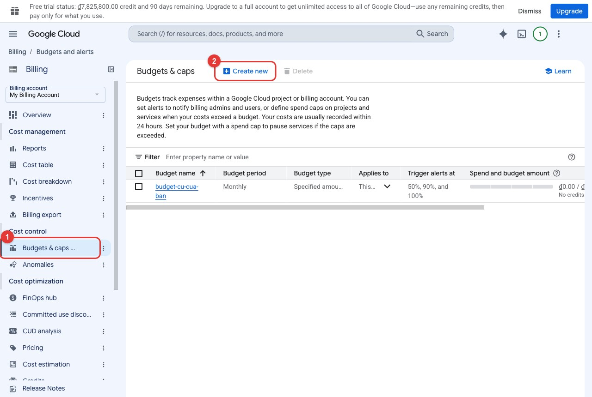
① Menu trái: Cost control → Budgets & caps. ② Nút Create new.- Define (bước 1/4): chọn Alerts only (available to all services) → Name
flash-core→ Next
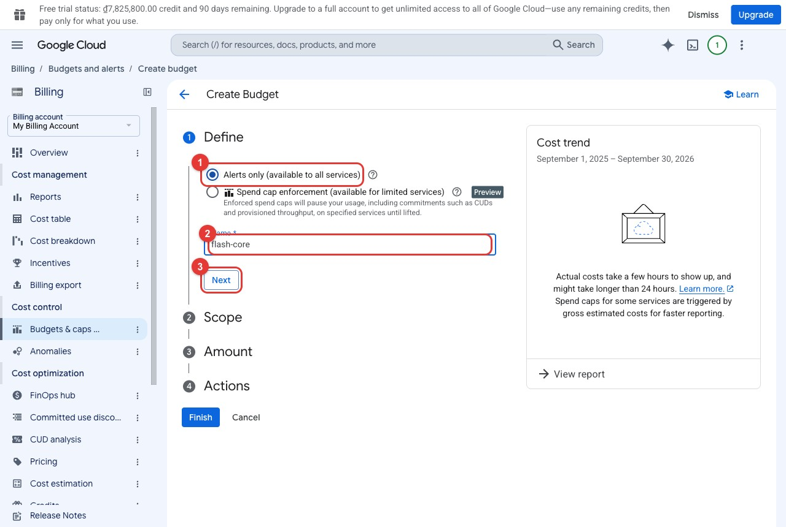
① Alerts only. ② Tên budget. ③ Next.- Scope (bước 2/4):
- Time range Monthly
- Projects và Services giữ All
- Kéo xuống mục Savings: hai ô Savings programs và Other savings đang được tick sẵn → bỏ tick cả hai
- Next
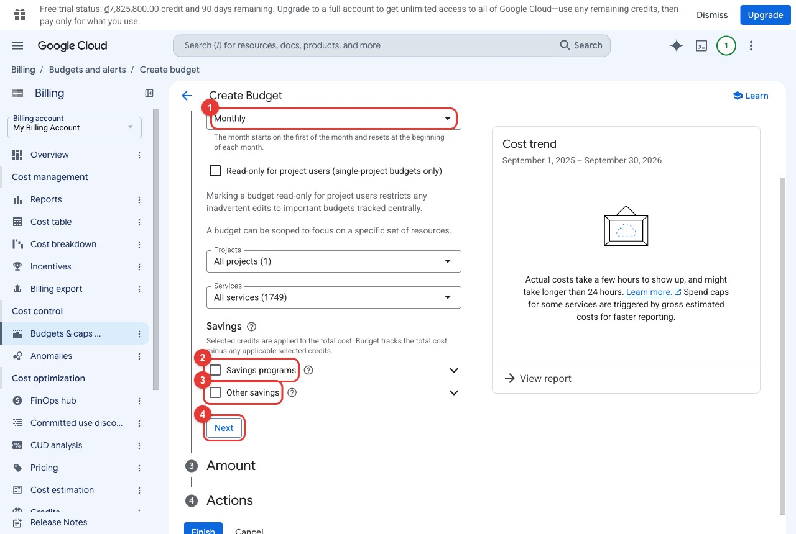
① Monthly. ② ③ Hai ô Savings — ảnh chụp lúc ĐÃ bỏ tick, đây là trạng thái đúng. ④ Next.- Amount (bước 3/4):
- Budget type Specified amount
- Target amount: nhìn ký hiệu tiền trước ô nhập. Tài khoản tính bằng ₫ thì nhập
300000(≈ $12); tính bằng $ thì nhập12 - Next
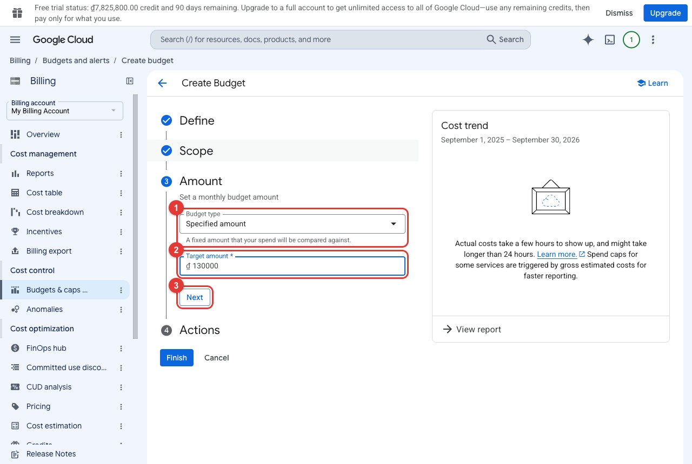
① Specified amount. ② Target amount — để ý ký hiệu ₫: gõ "5" ở đây nghĩa là 5 đồng. (Ảnh chụp lúc thử 130.000₫; con số đúng giờ là 300.000₫.) ③ Next.- Actions (bước 4/4):
- Set alert threshold rules: giữ ba mốc 50% / 90% / 100%, Trigger on Actual
- Manage notifications: giữ tick Email alerts to billing admins and users
- Finish
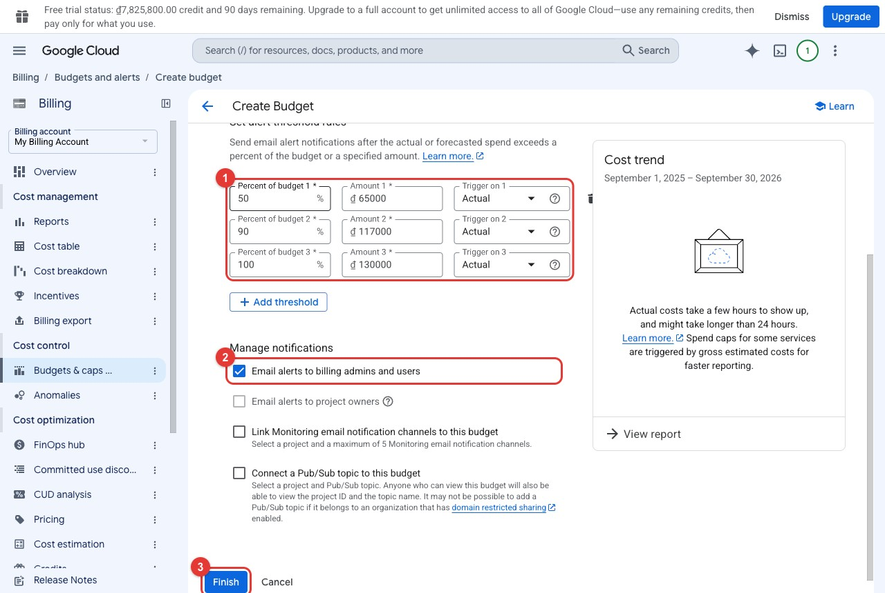
① Ba mốc 50/90/100%, Trigger on Actual (Console tự tính ra số tiền). ② Email alerts to billing admins and users. ③ Finish.1.1 Vì sao cấu hình như vậy
Để làm gì: hiểu vì sao từng ô trong form budget đặt như vậy — nhất là hai ô Savings quyết định cảnh báo có bao giờ kêu hay không.
- Làm budget TRƯỚC cả project. Mọi thứ từ §2 trở đi đều có thể phát sinh tiền, và cách duy nhất biết mình đang tiêu là được báo — bảng chi phí thì phải tự nhớ mà mở, và thứ phải nhớ thì sẽ quên đúng vào tháng có chuyện. Tạo budget sau khi đã dựng hạ tầng thì khoảng giữa hai việc là khoảng không ai canh.
- Bước 1 — sửa budget có sẵn thay vì tạo cái thứ hai. Hai budget cùng phạm vi là hai luồng email cho cùng một sự kiện; đọc một cái rồi tưởng đã xử lý xong cả hai.
- Bước 2 — Alerts only, không chọn Spend cap enforcement.
- Alerts only chỉ báo, dịch vụ vẫn chạy. Dự án cần biết khi tiêu quá, chưa cần Google tắt dịch vụ giữa chừng.
- Spend cap enforcement chặn cứng khi chạm trần. Console ghi rõ nó "available for limited services" và khi kích hoạt thì "pause your usage … until lifted". Chưa kiểm được Cloud SQL / Cloud Run có trong danh sách được hỗ trợ không — nếu không có thì cái trần đó không chặn đúng thứ tốn tiền nhất, mà vẫn tạo cảm giác đã an toàn.
- Chọn khác thì: bật chặn cứng cho một dịch vụ có trong danh sách thì app có thể chết giữa lúc demo vì chạm trần, và không có gì báo lý do ngoài hoá đơn.
- Bước 3 — Monthly. Cloud SQL, Artifact Registry, Secret Manager đều tính tiền theo tháng, và free tier cũng reset theo tháng. Budget theo quý hoặc năm thì một tháng tiêu gấp ba vẫn chưa chạm mốc 50%.
- Bước 3 — Projects và Services giữ All. Budget phủ cả tài khoản billing, kể cả project dev ở §18 và kể cả một dịch vụ bật nhầm mà mình không biết tên. Thu hẹp về một project thì đúng thứ mình không ngờ tới lại nằm ngoài vùng canh.
- Bước 3 — bỏ tick hai ô Savings. Dòng chữ ngay dưới chữ Savings nói rõ budget theo dõi "total cost minus any applicable selected credits" — chi phí sau khi trừ các mục đang tick. $300 credit nằm trong Other savings (bấm mũi tên cạnh nó sẽ thấy Promotional credits).
- Để tick: budget thấy 0đ suốt 90 ngày và không bao giờ kêu, dù Cloud SQL chạy 24/7. Một cảnh báo không bao giờ kêu thì bằng không có.
- Bỏ tick: budget đo chi phí thật, tức là đo đúng số tiền sẽ ra hoá đơn khi credit hết.
- Bước 4 — ≈ $12 (300.000₫), không phải $1. Cloud SQL chạy liên tục đã ~$9/tháng (ADR-016).
- Ngưỡng thấp hơn mức bình thường thì tháng nào cũng kêu, và cảnh báo lúc nào cũng kêu thì chẳng ai đọc nữa.
- Ngưỡng ngay trên mức bình thường thì kêu nghĩa là có chuyện — thường là một instance tạo sai máy (§4.1 bước 5.1) hoặc bật nhầm HA/PITR.
- Dựng thêm project dev (§18) thì nâng lên ≈ 600.000₫, vì mỗi project có một Cloud SQL.
- Bước 4 — nhìn đơn vị tiền trước khi gõ. Lúc đối chiếu, chính tài khoản mẫu tính bằng ₫. Gõ
5theo thói quen đô-la thì budget là 5 đồng: kêu từ đồng đầu tiên, rồi bị bỏ qua mãi mãi. - Bước 5 — ba mốc 50 / 90 / 100%. Cảnh báo chỉ có giá trị khi tới sớm hơn hậu quả: 50% là lúc còn kịp tìm nguyên nhân, 90% là lúc phải sửa ngay, 100% là lúc đã muộn — chỉ còn để xác nhận.
- Bước 5 — Trigger on Actual, không phải Forecasted. Forecasted báo theo dự báo cuối tháng, mà dự báo cần lịch sử chi tiêu; project mới chưa có lịch sử nên dự báo dễ nhảy, báo nhầm ngay tuần đầu. Khi đã chạy ổn vài tháng thì có thể thêm một mốc Forecasted 100%.
- Bước 5 — email tới billing admin. Anh là billing admin nên thư đi tới tài khoản Google đang đăng nhập Console. Không có nút gửi thử — thư đầu tiên ở mốc 50% chính là lần kiểm tra, lúc đó xem cả mục Spam.
2. Tạo project và bật API
Để làm gì: dựng cái hộp chứa mọi thứ (project) và bật đúng 7 dịch vụ mà các bước sau sẽ gọi tới.
- Trên thanh trên cùng, bấm vào tên project → New project → đặt tên
flash-core-demo→ Create. Ghi lại hai giá trị (§7 cần cả hai):- Project ID — Console tự thêm hậu tố nếu tên bị trùng
- Project number — xem ở ☰ → Cloud overview → Dashboard, thẻ Project info
- ☰ → Billing → nếu Console báo project chưa có tài khoản thanh toán → Link a billing account
- ☰ → APIs & Services → Library, tìm từng API rồi bấm Enable:
- Cloud Run Admin API
- Artifact Registry API
- Secret Manager API
- Cloud Scheduler API
- Cloud SQL Admin API
- IAM Service Account Credentials API
- Security Token Service API
Làm bằng lệnh: §2 bản lệnh.
2.1 Lỡ vào màn "Create credentials" thì bấm Cancel
Để làm gì: thoát khỏi màn dễ bấm nhầm đó mà không tạo ra thứ gì thừa.
Ở APIs & Services có mục Credentials nằm ngay cạnh Library. Bật API xong rất dễ bấm nhầm sang đó và gặp màn này:
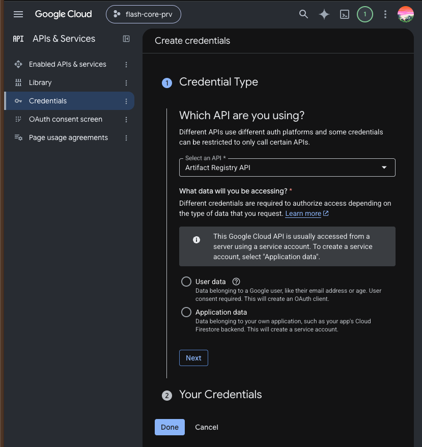
Với Flash-Core: bấm Cancel, không tạo gì. Lý do ở §2.2.
2.2 Vì sao cấu hình như vậy
Để làm gì: hiểu mỗi API vừa bật đảm nhiệm việc gì, và tắt cái nào thì hỏng ở đâu.
- Bước 1 — ghi lại cả Project ID lẫn Project number. Hai thứ khác nhau và mỗi chỗ dùng một cái: Project ID (chữ, do mình đặt) dùng trong hầu hết đường dẫn và lệnh; Project number (dãy số, Google cấp) dùng trong tên tài nguyên Workload Identity (§7.4). Dán nhầm cái này vào chỗ cái kia là lỗi
authở CI mà thông báo không nói gì về project. - Bước 2 — project phải gắn billing dù đang dùng credit: credit nằm trên tài khoản billing, project không gắn thì không tiêu được credit, và Cloud SQL (không có gói free) từ chối tạo.
- Bước 3 — bật đủ 7 API ngay từ đầu. Console thường tự hỏi bật API khi mở một dịch vụ lần đầu — nhưng hai API cuối không có trang riêng, nên không ai hỏi. Thiếu chúng thì Workload Identity Federation (§7) không đổi được token, và CI đỏ ở bước
authvới một thông báo chẳng nhắc gì tới API. - Region
us-central1(dùng từ §3 trở đi) không phải tuỳ tiện. Free tier của Cloud Run chỉ áp ở một số region, và đây là region dự án đã chốt. Đổi region thì phải đổi cùng lúc nơi đặt Artifact Registry (§3), Cloud SQL (§4) và Upstash (§5) — lệch một chỗ là mỗi request đi xuyên vùng: chậm hơn vài chục ms, tính tiền egress, và không có dấu hiệu nào báo.
Mỗi API đảm nhiệm gì, xếp theo thứ tự chúng được gọi trong một lần deploy — biết cái nào đỡ việc gì thì lúc hỏng mới đoán được chỗ:
| # | API | Ai gọi nó, lúc nào | Tắt thì hỏng ở đâu |
|---|---|---|---|
| 1 | Security Token Service (sts) | GitHub Actions, ngay đầu workflow: đưa token OIDC của chính nó, STS kiểm issuer + điều kiện repository=='phamtam215/flash-core' (§7.2) rồi đổi lấy token liên kết | CI đỏ ở step auth |
| 2 | IAM Service Account Credentials | Ngay sau đó: đổi token liên kết lấy access token ngắn hạn của github-deployer (generateAccessToken) | CI đỏ ở step auth, báo mơ hồ kiểu unable to acquire impersonated credentials |
| 3 | Artifact Registry | Runner docker push image lên us-central1-docker.pkg.dev/…; sau đó Cloud Run kéo image về để chạy. Cũng là nơi chính sách dọn image (§3) sống | Push đỏ; hoặc deploy xong container không khởi động được vì không kéo nổi image |
| 4 | Cloud SQL Admin | Cloud SQL Auth Proxy hỏi nó thông tin kết nối + chứng chỉ — proxy chạy hai chỗ: trên runner lúc migrate deploy, và trong Cloud Run qua --set-cloudsql-instances (ADR-016) | Bước migrate treo rồi timeout; app chạy nhưng không nối được DB |
| 5 | Cloud Run Admin | gcloud run deploy tạo/cập nhật service flash-core-api + hai Cloud Run Job (migrate, worker); và update-traffic lúc rollback khi /ready không xanh | Toàn bộ bước deploy đỏ |
| 6 | Secret Manager | Không phải CI — mà flash-core-runtime lúc container khởi động, đọc 6 secret rồi bơm thành biến môi trường. CI chỉ khai báo "service này dùng secret X" | Container khởi động rồi chết ngay: config validate bằng Zod thấy thiếu biến là thoát |
| 7 | Cloud Scheduler | Sau khi deploy xong, mỗi 5 phút gọi Cloud Run Job worker chạy một lượt rồi thoát (ADR-012) | Xem ô cảnh báo dưới |
Chỉ mình Cloud Scheduler hỏng theo kiểu IM LẶNG. Sáu API kia tắt là có cái gì đó đỏ ngay trước mắt. Thiếu Scheduler thì deploy vẫn xanh, trang web vẫn mở, đặt hàng vẫn được — nhưng không job nền nào chạy: outbox không ai đẩy (email không gửi), sweeper không ai gọi (đơn quá hạn nằm
PENDINGmãi, giữ kho không trả), đợt sale hết giờ không ai đóng (hàng tồn kẹt lại). Đúng kiểu lỗi mà §Vòng đời dữ liệu đã gặp một lần rồi.Hai cái tên dễ hiểu nhầm. Cloud SQL Admin nghe như chỉ để quản trị instance, nhưng kết nối thường ngày cũng cần — vì mọi đường đều đi qua proxy. Và IAM Service Account Credentials chính là thứ thay cho file khoá JSON: nó phát token sống một tiếng thay vì một file sống mãi.
§2.1 — vì sao không tạo gì ở màn Create credentials. Bật API và tạo thông tin xác thực là hai việc khác nhau — §2 chỉ cần việc thứ nhất. Thông tin xác thực mà dự án dùng được tạo ở chỗ khác: service account ở §7.1, còn CI thì không có thông tin xác thực nào cả vì nó dùng Workload Identity Federation. Ba field trên màn đó vẫn đáng hiểu — chúng xuất hiện lại ở nhiều dịch vụ khác:
| Field | Nghĩa là gì |
|---|---|
| Select an API | Thông tin xác thực sắp tạo sẽ bị giới hạn trong đúng API này. Đây là cách thu hẹp thiệt hại: một khoá lộ ra chỉ mở được đúng một cửa, không phải cả project |
| User data | Ứng dụng hành động thay mặt một con người — cần màn hình xin phép, và người đó bấm "Đồng ý". Tạo ra một OAuth client. Dùng khi app cần đọc Gmail/Drive của người dùng |
| Application data | Ứng dụng tự nó hành động, không có con người nào ở giữa. Tạo ra một service account. Đây là đường server-to-server |
Hộp thông tin màu xám trên màn hình đã nói ra câu trả lời: "This Google Cloud API is usually accessed from a server using a service account." Nếu buộc phải chọn thì là Application data. Nhưng đường đó dẫn thẳng tới chỗ dự án cố tình tránh: sau khi tạo service account, Console sẽ mời tải về một file khoá JSON — bí mật dài hạn, không hết hạn, không biết đã rò, dùng được từ bất cứ đâu. ADR-014 chọn Workload Identity Federation đúng để không bao giờ phải tạo file đó.
Cách phân biệt về sau, gói trong một câu: Library là bật một dịch vụ, Credentials là phát chìa khoá. Dự án này bật nhiều dịch vụ nhưng không phát chìa khoá nào.
3. Artifact Registry + chính sách dọn image
Để làm gì: dựng kho chứa Docker image, và đặt luôn chính sách tự dọn để kho không âm thầm đầy lên rồi phát sinh tiền.
- ☰ → Artifact Registry → Repositories → Create repository
- Điền phần đầu form:
- Name
flash-core - Format Docker
- Mode Standard
- Location type Region →
us-central1
- Name
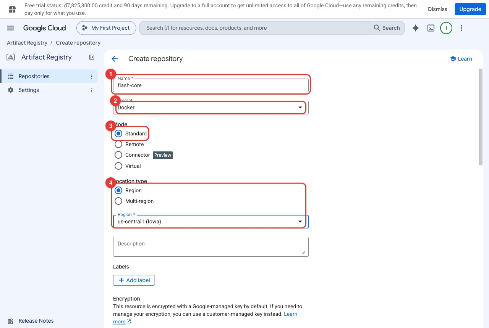
① Name. ② Format Docker. ③ Mode Standard. ④ Location type Region + us-central1. Nếu hiện hộp "Artifact Registry API has not been used…" là API chưa bật — làm bước 3 của §2 rồi tải lại trang.- Mục Cleanup policies: Dry run đang được chọn sẵn → đổi sang Delete artifacts, rồi Add a cleanup policy hai lần (mỗi cái xong bấm Done):
- Name
giu-3-tag-moi-nhat— Policy type Keep most recent versions, Keep count3 - Name
xoa-image-cu-qua-7-ngay— Policy type Conditional delete, Tag state Any, tick Older than rồi điền7d
- Name
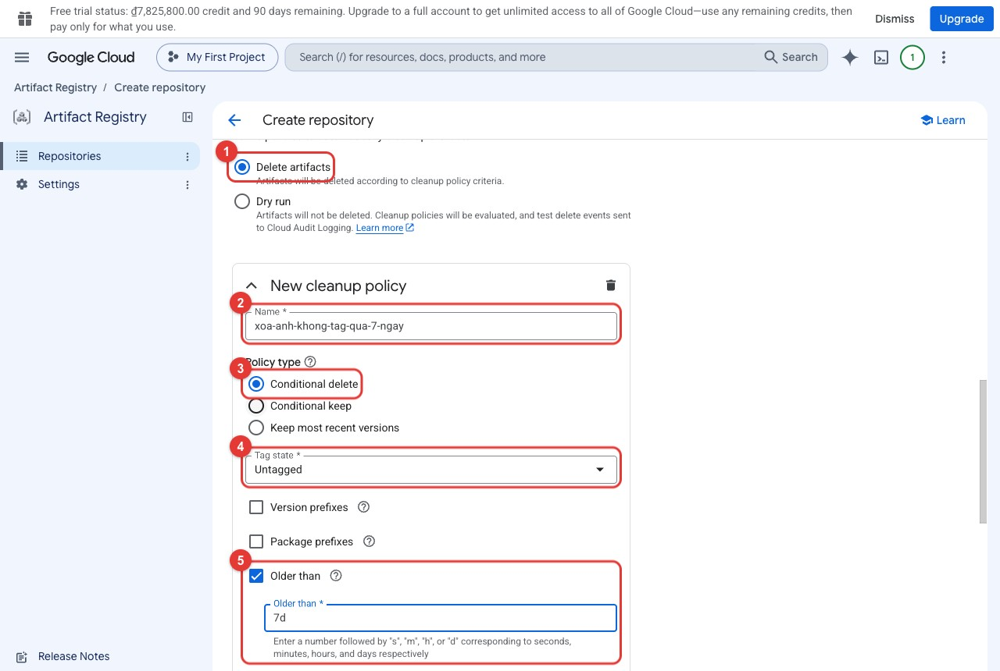
① Delete artifacts (không phải Dry run). ② Tên chính sách. ③ Conditional delete. ④ Tag state — ảnh chụp lúc đang chọn Untagged; chọn Any (lý do ở §3.1). ⑤ Tick Older than, điền 7d. Xong bấm Done ở cuối khung.- Mục Vulnerability scanning (cuối form): đổi sang Disabled
- Create
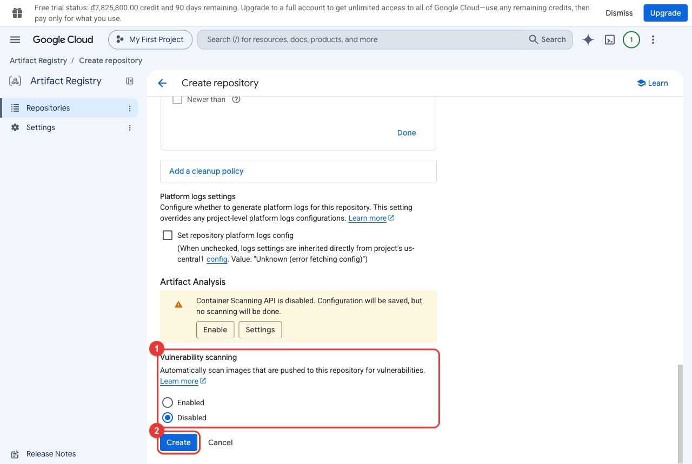
① Vulnerability scanning → Disabled. ② Create.Làm bằng lệnh: §3 bản lệnh.
3.1 Vì sao cấu hình như vậy
Để làm gì: hiểu vì sao chính sách dọn image phải đặt ngay lúc tạo kho chứ không để sau.
- Bước 2 — Name
flash-core. Tên này nằm trong đường dẫn image (us-central1-docker.pkg.dev/<PROJECT_ID>/flash-core/api) màdeploy.ymlđã viết sẵn. Đặt tên khác thì bước push đỏ với lỗi repository not found. Tên repository không đổi được sau khi tạo. - Bước 2 — Format Docker. Cloud Run chỉ chạy container image; các format khác (npm, Maven, Python…) là để lưu thư viện, không phải image.
- Bước 2 — Mode Standard. Standard là kho mình tự đẩy image vào. Remote là kho đệm cho một nguồn ngoài (ví dụ Docker Hub); Virtual là gộp nhiều kho sau một địa chỉ. Dự án chỉ có image do CI build nên chỉ cần Standard.
- Bước 2 — Region
us-central1, không phải Multi-region. Cloud Run chạy ởus-central1; kho cùng region thì mỗi lần Cloud Run khởi động instance mới là kéo image trong cùng vùng — nhanh hơn, và không tính tiền egress xuyên vùng. Kho multi-region (us) đắt hơn và không đem lại gì cho một dịch vụ chỉ chạy ở một region. - Bước 3 — chính sách dọn, bật ngay từ lúc tạo kho. Mỗi lần deploy đẩy một image mới ~150–200 MB, free tier là 0,5 GB — tức là chạm trần sau khoảng ba lần deploy. Kho đầy không làm hỏng gì lúc này; nó âm thầm tính tiền từ lần deploy thứ tư, và đây thường là thứ đầu tiên phát sinh tiền trong cả dự án.
- Bước 3 — Delete artifacts, không phải Dry run. Dry run chỉ ghi log "lẽ ra sẽ xoá cái này" chứ không xoá gì. Chọn nhầm thì nhìn vào vẫn thấy chính sách đầy đủ mà image vẫn dồn lên — kiểu sai trông như đúng.
- Bước 3 — giữ 3 bản mới nhất. Rollback (§12) là chuyển traffic về revision cũ, mà revision cũ trỏ vào image cũ; image đó bị xoá thì revision đó không khởi động được instance mới nữa. Giữ 3 là đủ lùi hai lần deploy. Chính sách Keep được ưu tiên hơn Delete, nên 3 bản này an toàn dù chúng có thoả điều kiện xoá.
- Bước 3 — xoá image quá 7 ngày ở mọi trạng thái tag (Any), không chỉ Untagged.
deploy.ymlgắn tag image bằng SHA của commit (…/flash-core/api:<sha>), nên mỗi lần deploy là một tag mới và image cũ không bao giờ tuột tag. Chính sách chỉ xoá Untagged thì không bao giờ khớp image nào — kho vẫn dồn, dù nhìn vào thấy đủ hai chính sách. (Bản trước của hướng dẫn này chọn Untagged và mắc đúng lỗi đó.) Chọn Any + chính sách giữ 3 bản ở trên thì kết quả là: 3 bản mới nhất luôn còn, bản cũ hơn quá 7 ngày bị xoá. 7 ngày là khoảng đệm để kịp rollback nếu một bản mới hỏng mà vài ngày sau mới phát hiện. - Bước 4 — tắt Vulnerability scanning. Mặc định là Enabled, và quét lỗ hổng tính tiền theo từng image được đẩy lên (⚠ kiểm bảng giá Artifact Analysis). Dự án học deploy nhiều lần sẽ trả tiền đều đặn cho một báo cáo không ai đọc; CI đã có cổng
npm auditchặn lỗ hổngcriticalở tầng thư viện.
4. Cloud SQL (PostgreSQL)
Để làm gì: dựng database thật trên cloud — nơi đơn hàng và tồn kho sẽ nằm — và mở được một đường vào nó từ máy anh.
4.1 Tạo instance
Để làm gì: dựng máy Postgres trên cloud với cấu hình rẻ nhất mà vẫn chạy được.
- ☰ → SQL → Create instance → Choose PostgreSQL (trang Create a PostgreSQL instance)
- Choose a Cloud SQL edition:
- Chọn Enterprise — không chọn Enterprise Plus
- Ô Edition preset ngay dưới đang là Production → đổi sang Sandbox
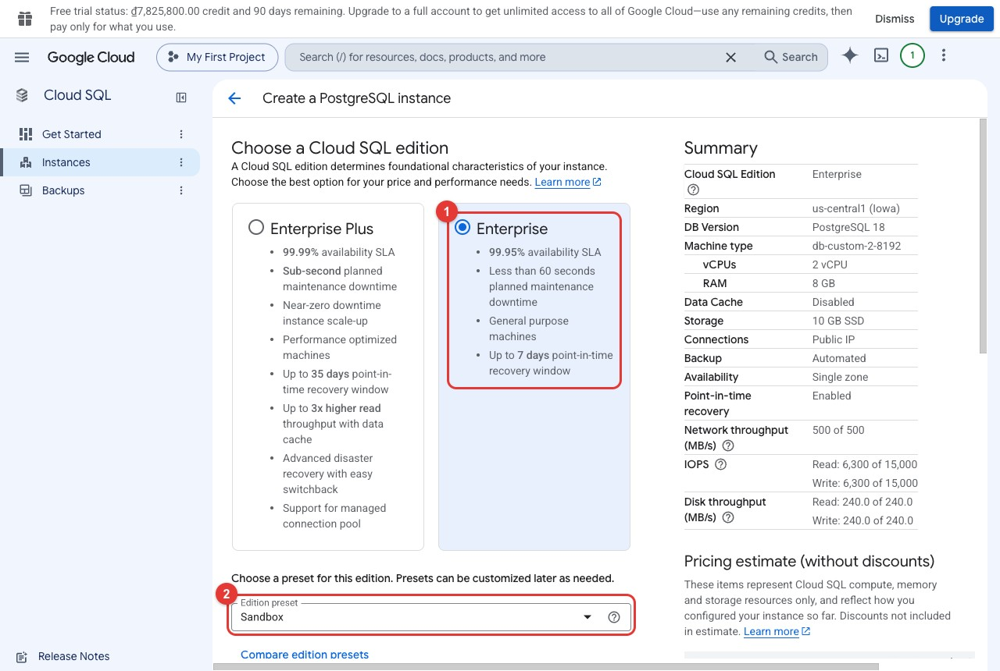
① Enterprise. ② Edition preset → Sandbox. Khung Summary bên phải cập nhật theo từng lựa chọn — dùng nó để kiểm lại.- Instance info:
- Database version: mặc định là PostgreSQL 18 → đổi sang PostgreSQL 16
- Instance ID:
flash-core-db - Password của user
postgres: bấm Generate rồi cất vào trình quản lý mật khẩu
- Choose region and zonal availability:
- Region us-central1 (Iowa)
- Zonal availability Single zone
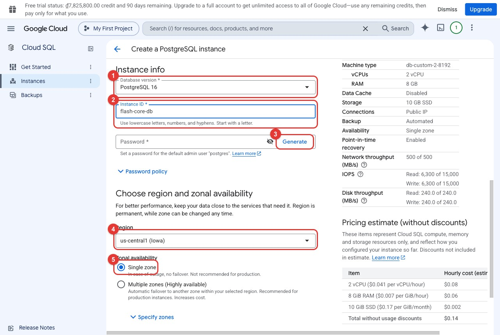
① PostgreSQL 16. ② Instance ID. ③ Generate password. ④ us-central1. ⑤ Single zone. Nhìn bảng giá góc phải dưới: máy mặc định của preset Sandbox là $0,14/giờ ≈ $100/tháng — vì thế bước 5 bắt buộc.- Customize your instance → Show configuration options, sửa bốn mục:
- Machine configuration: Machine family dropdown chọn General purpose - Shared core → Console chọn sẵn 1 vCPU, 1.7 GB → đổi sang 1 vCPU, 0.614 GB (chính là
db-f1-micro)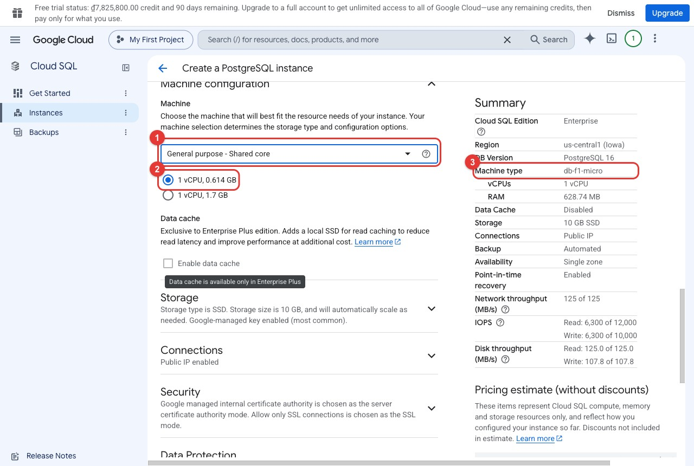
① General purpose - Shared core. ② 1 vCPU, 0.614 GB. ③ Summary phải ghi Machine type db-f1-micro. - Storage:
- Storage type SSD
- Storage capacity 10 GB
- Bỏ tick Enable automatic storage increases (đang tick sẵn)
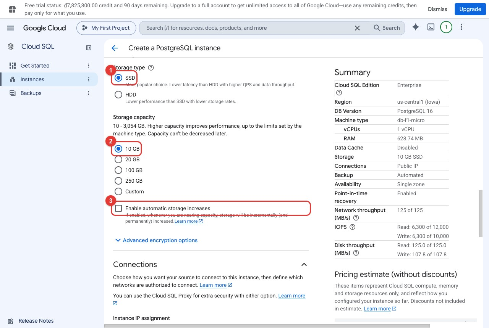
① SSD. ② 10 GB. ③ Enable automatic storage increases — ảnh chụp lúc ĐÃ bỏ tick. - Connections: Instance IP assignment giữ Public IP, không bấm Add a network
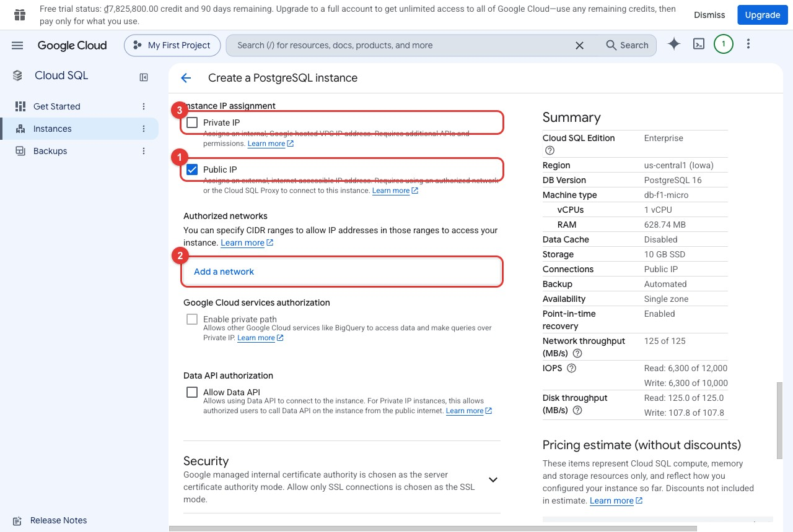
① Public IP giữ tick. ② Không bấm Add a network — danh sách để trống. ③ Private IP: để trống, trừ khi sau này chọn hướng Private IP ở §16. - Data Protection:
- Giữ tick Automated daily backups; Backup window chọn một khung buổi tối (Console hiển thị theo giờ máy anh, GMT+7)
- Bỏ tick Enable point-in-time recovery
- Giữ tick Prevent instance deletion
- Bỏ tick Retain backups after instance deletion và Final backup on instance deletion
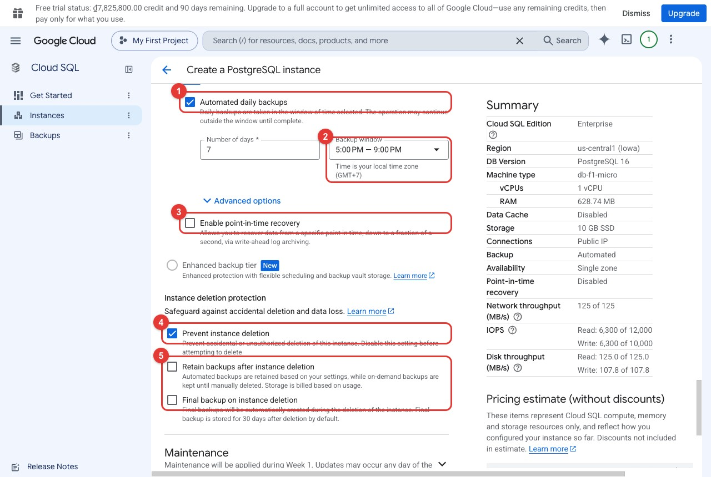
① Automated daily backups. ② Backup window (giờ GMT+7). ③ Point-in-time recovery — đã bỏ tick. ④ Prevent instance deletion giữ tick. ⑤ Hai ô giữ backup sau khi xoá — đã bỏ tick.
- Machine configuration: Machine family dropdown chọn General purpose - Shared core → Console chọn sẵn 1 vCPU, 1.7 GB → đổi sang 1 vCPU, 0.614 GB (chính là
- Mục Security để nguyên (Allow only SSL connections). Kéo xuống cuối, kiểm bảng giá rồi mới bấm Create instance — mất 5–10 phút.
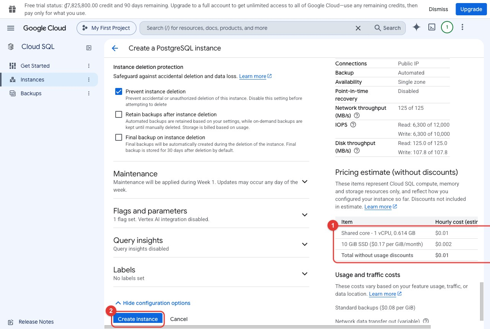
① Bảng giá phải ra khoảng $0,01/giờ (máy) + $0,002/giờ (ổ 10 GB). Bảng này KHÔNG tính tiền IP lúc máy tắt — xem §15. ② Create instance. Tạo xong, mở Overview kiểm lại hai dòng Edition và Machine type.- Khi instance có dấu xanh, làm ba việc ở menu trái bên trong instance (không phải tab trên cùng; menu thường thu gọn thành một cột dấu ⋮ — bấm biểu tượng mở rộng panel cạnh chữ Overview thì mới thấy tên các mục):
- Databases → Create database →
flashcore - Users → Add user account → Built-in authentication, username
flashcore, password sinh bằngopenssl rand -hex 24trên máy. Cất lại — đây làDB_PASSdùng ở §6 và §8. - Overview → thẻ Connect to this instance → chép Connection name (dạng
project:us-central1:flash-core-db) — đây làSQL_INSTANCEdùng ở §6 và §8
- Databases → Create database →
- Trên Overview có khung Knowledge Catalog: tắt nó ở Edit → Flags and parameters → bỏ tick Enable Knowledge Catalog integration → Save
Làm bằng lệnh: §4.1 bản lệnh.
4.2 Xem và sửa dữ liệu trên trình duyệt — Cloud SQL Studio
Để làm gì: xem và sửa dữ liệu ngay trên trình duyệt, không phải cài gì.
- Vào instance → Cloud SQL Studio ở menu trái
- Đăng nhập user
flashcore, databaseflashcore - Gõ SQL thẳng trên trình duyệt — không cần cài gì
Đủ để xem bảng và sửa vài dòng; không chạy được script của repo. §11 bước 5 dùng cách này.
4.3 Nối từ máy local (psql, DBeaver, script của repo)
Để làm gì: mở đường từ máy anh vào database cloud, để dùng DBeaver/psql và chạy script của repo.
máy anh Google Cloud
┌─────────────────┐ ┌─────────────────┐ ┌───────────────┐
│ psql / DBeaver │─────►│ cloud-sql-proxy │═══TLS══► │ flash-core-db │
│ script của repo │ 6543 │ (đang chạy) │ + IAM │ (IP để trống) │
└─────────────────┘ └─────────────────┘ └───────────────┘
▲
danh tính Google của anh
(role cloudsql.client)- Quyền: tài khoản Google của anh cần role
cloudsql.client. Anh là Owner nên đã có sẵn — người khác trong nhóm thì cấp riêng (§18.2). - Cài proxy, đăng nhập, mở proxy — việc trên terminal: §4.2 bản lệnh.
- Điền vào công cụ có giao diện (TablePlus, DBeaver, DataGrip, pgAdmin) khi proxy đang chạy:
- Host
127.0.0.1 - Port
6543 - User
flashcore· Password<DB_PASS>· Databaseflashcore - SSL off
- Host
4.4 Vì sao cấu hình như vậy
Để làm gì: hiểu vì sao gần như mọi mặc định của form Cloud SQL đều phải sửa, và vì sao không mở IP cho ai.
Mọi mặc định của form tạo instance đều nghiêng về production — preset Production, nhiều vùng, PITR, giữ backup sau khi xoá. Bỏ sót một mục máy là hoá đơn nhảy từ vài đô lên cỡ trăm đô/tháng. Vì thế mục này dài: mỗi ô sửa ở §4.1 đều có lý do.
4.4.1 Edition, phiên bản, vị trí (§4.1 bước 2–4)
- Bước 2 — Enterprise, không phải Enterprise Plus. Bản Plus nhắm tới tải lớn, có SLA cao hơn, và không có máy dùng chung CPU nào — máy nhỏ nhất của nó giá hàng trăm đô/tháng. Chọn nhầm thì ở bước 5 không còn đường xuống
db-f1-micro. Với Postgres 16 thì Plus là mặc định, nên đây là chỗ phải chủ động đổi. - Bước 2 — preset Sandbox. Preset Production điền sẵn 8 vCPU, 32 GB, 250 GB, HA. Sandbox gần nhất với thứ cần, nhưng vẫn chưa đủ nhỏ — nó dùng máy 2 vCPU (bước 5.1 sửa tiếp). Chọn preset chỉ để bớt số ô phải sửa, không phải để xong việc.
- Bước 3 — Postgres 16, không phải 18. Bộ test và
docker-compose.ymlchạy trên 16. Test ở một phiên bản rồi deploy sang phiên bản khác là để dành lỗi cho môi trường thật — khác biệt phiên bản thường nằm ở chỗ ít ai nhìn: hành vi planner, cú pháp mới, extension. Muốn lên 18 thì lên ở compose + CI trước, cloud sau. - Bước 3 — Instance ID
flash-core-db. Tên này nằm trong Connection name màdeploy.yml,scripts/gcp-db.shvà biếnGCP_SQL_INSTANCEdùng. Không đổi được sau khi tạo, và tên vừa xoá có thể bị giữ tới một tuần (§15.3). - Bước 3 — mật khẩu
postgresvào trình quản lý mật khẩu, không vào đâu khác. Một instance Postgres chứa nhiều tài khoản đăng nhập, dự án này có hai:User Ai đăng nhập bằng nó Quyền postgresAnh, khi vào sửa tay bằng psqlSuperuser — tạo/xoá database, tạo user, đọc mọi thứ flashcore(tạo ở bước 7)App và bước migrate Chỉ đọc/ghi trong database flashcoreCloud SQL bắt buộc đặt mật khẩu cho
postgreslúc tạo, nhưngDATABASE_URLở §6 bắt đầu bằngpostgresql://flashcore:…— mật khẩupostgreskhông xuất hiện trong Secret Manager, trongdeploy.yml, hay bất cứ đâu trong code. Lý do không cho app dùng luônpostgres: chuỗi kết nối của app nằm trong biến môi trường của container và sẽ lọt vào log nếu ai đó lỡ in nó ra. Chuỗi superuser mà lộ thì mất cả instance (xoá được database, tạo được user mới để quay lại sau); chuỗi củaflashcorelộ thì mất đúng một database, và chữa bằng cách đổi một mật khẩu. - Bước 4 —
us-central1. Cùng region với Cloud Run: mỗi câu query đi trong cùng vùng. Khác region thì mỗi query cộng thêm độ trễ mạng xuyên vùng — với một request chạy 5–10 câu SQL là cộng dồn thành con số người dùng cảm nhận được. - Bước 4 — Single zone. Multiple zones (HA) dựng thêm một máy dự phòng ở zone khác và tự chuyển sang nếu zone chính sập — nhân đôi tiền. Đáng cho hệ thống có người dùng thật; với môi trường thử thì một zone sập vài phút là chấp nhận được.
4.4.2 Máy, ổ đĩa, mạng, sao lưu (§4.1 bước 5–6)
- Bước 5.1 — máy
db-f1-micro: quan trọng nhất cả mục. Preset Sandbox dùngdb-custom-2-8192(2 vCPU, 8 GB) ≈ $100/tháng;db-f1-micro≈ $0,01/giờ, rẻ hơn khoảng mười lần. Bỏ sót đúng một ô này là hoá đơn gấp mười.- Đủ không? Máy này có 0,6 GB RAM và
max_connections = 25, trong khi trần connection của dự án là ≤ 17 (ADR-016). Đủ cho demo, không đủ cho load test — và load test vốn không được bắn lên cloud. - Cái giá phải biết: máy shared core dùng chung CPU với khách khác và không có SLA. Độ trễ có thể nhảy thất thường; đừng lấy số đo trên máy này làm bằng chứng hiệu năng.
- Đủ không? Máy này có 0,6 GB RAM và
- Bước 5.2 — SSD. HDD rẻ hơn mỗi GB nhưng chậm hơn nhiều ở truy cập ngẫu nhiên — đúng kiểu truy cập của một DB giao dịch. Ở 10 GB, chênh lệch chưa tới $1/tháng (⚠ kiểm bảng giá), không đáng đổi lấy DB chậm.
- Bước 5.2 — 10 GB. Là mức nhỏ nhất Cloud SQL cho phép. Dữ liệu demo cỡ vài MB.
- Bước 5.2 — bỏ tick automatic storage increases. Ổ Cloud SQL nới được nhưng không thu lại được. Để tự nới thì một lần đầy đĩa vì log hay một script chạy nhầm là trả tiền cho phần dư đó mãi mãi. Tắt đi thì đầy đĩa là DB báo lỗi — ồn ào, nhưng rẻ và sửa được.
- Bước 5.3 — giữ Public IP, không thêm mạng nào. Nghe ngược, nhưng đây là cách rẻ và đơn giản nhất: Cloud Run nối qua Cloud SQL connector (socket
/cloudsql/...), máy dev và GitHub runner nối qua Cloud SQL Auth Proxy — cả hai không đi bằng IP nguồn mà xác thực bằng IAM (rolecloudsql.client) rồi mới tới mật khẩu DB. Thêm dải IP vào danh sách chỉ là mở thêm một cửa thừa.- Hệ quả phải hiểu đúng (bẫy #5 ở spec Phase 7 §Bài toán #6): "danh sách IP trống" không có nghĩa là đóng cửa — connector đi vòng qua lớp IP. Hàng rào thật là ai có role
cloudsql.clientcộng mật khẩu. Cấp role đó cho ai là mở cửa cho người đó. - Private IP thì kín hơn nhưng phải dựng thêm VPC + Private Services Access. Để dành cho lúc hết credit (§16), vì chỉ khi đó nó mới đem lại lợi ích về tiền.
- Hệ quả phải hiểu đúng (bẫy #5 ở spec Phase 7 §Bài toán #6): "danh sách IP trống" không có nghĩa là đóng cửa — connector đi vòng qua lớp IP. Hàng rào thật là ai có role
- Bước 5.4 — giữ Automated daily backups. Bản sao lưu hằng ngày là mạng an toàn gần như miễn phí với dữ liệu vài MB. Mất nó thì một câu
DELETEgõ nhầm là mất hết. - Bước 5.4 — Backup window buổi tối. Sao lưu chỉ chạy khi máy đang bật. Giai đoạn credit máy chạy liên tục nên giờ nào cũng được, nhưng nếu sau này chuyển sang tắt khi nghỉ (§16) thì khung buổi tối — lúc hay bật máy học nhất — là khung duy nhất chắc chắn chạy.
- Bước 5.4 — bỏ point-in-time recovery. PITR cho phép quay về từng giây trong quá khứ, đổi lại ghi log giao dịch liên tục vào ổ — thêm dung lượng, thêm tiền. Dự án học không cần độ chính xác đó; backup hằng ngày là đủ.
- Bước 5.4 — giữ Prevent instance deletion. Chặn xoá nhầm từ Console hoặc lệnh. Muốn xoá thật (§15.2) thì bỏ tick trước — thêm một bước là cố ý.
- Bước 5.4 — bỏ hai ô giữ backup sau khi xoá. Giữ chúng thì xoá instance xong vẫn còn bản sao lưu tính tiền thêm tới 30 ngày. Khi xoá instance ở dự án này là muốn về 0đ; dữ liệu demo tạo lại được trong 5 phút.
- Bước 6 — Allow only SSL connections. Connector và proxy đều mã hoá sẵn, nên ép SSL không làm hỏng đường nào của dự án mà chặn được một kết nối thô nếu có ai đó thử.
- Bước 6 — đọc bảng giá trước khi bấm Create. Đây là lần cuối còn sửa được miễn phí — đổi máy sau khi tạo thì instance phải khởi động lại. Bảng phải ra khoảng $0,01/giờ cho máy + $0,002/giờ cho ổ ⇒ chạy liên tục ~$9/tháng, trừ vào credit. Vì sao không tắt khi nghỉ cho rẻ hơn: §15.3.
4.4.3 Database, user, tên kết nối (§4.1 bước 7–8)
- Bước 7 phải chờ dấu xanh. Instance mất 5–10 phút để dựng; chừng nào thanh dưới còn quay
Creating…thì chưa có Postgres nào đang chạy, nên Databases và Users bị khoá. - Database riêng
flashcore, không dùng databasepostgresmặc định. Databasepostgreslà chỗ của hệ thống và công cụ quản trị. Để app ở database riêng thì quyền của userflashcoregói gọn trong đúng một database. - Mật khẩu dạng hex (
openssl rand -hex 24). Chuỗi hex chỉ có0-9a-f, nên ghép thẳng vàopostgresql://flashcore:<mật khẩu>@…mà không phải URL-encode. Mật khẩu có@,/hay#thì chuỗi kết nối bị cắt sai chỗ — và lỗi báo ra là "sai host" chứ không phải "sai mật khẩu". 24 byte ngẫu nhiên = 192 bit, dư sức cho một mật khẩu không bao giờ gõ tay. - Chép Connection name, không phải Project ID. Dạng
project:region:instance— đó là thứ proxy và--set-cloudsql-instancescần để tìm đúng instance. Nó trông giống Project ID ở phần đầu nên dễ chép nhầm cái trên thanh tiêu đề. - Bước 8 — tắt Knowledge Catalog. Google tự bật tích hợp này và gửi metadata của instance (tên bảng, tên cột — không phải dữ liệu) sang dịch vụ đó. Vô hại với dự án này, nhưng nó là một dịch vụ được bật mà anh không chọn — và nguyên tắc của cả hướng dẫn là không để thứ gì chạy mà mình không biết vì sao nó chạy.
4.4.4 Nối từ máy local (§4.3)
- Qua proxy, không mở IP nhà mình. IP nhà đổi mỗi lần modem khởi động lại, và mở nó ra là mở cho mọi người dùng chung đường mạng đó (quán cà phê, công ty). Proxy thì hàng rào là danh tính Google của anh — thu hồi bằng một dòng IAM, không phải đi sửa danh sách IP. Nhìn sơ đồ ở §4.3 thì thấy điều quan trọng nhất: công cụ của anh tưởng nó đang nói với một Postgres ở
localhost— không đổi gì trong công cụ, chỉ đổi cổng. - Port
6543, không phải 5432. Máy này đã có Postgres cài thẳng ở 5432 và Docker Compose ở 5433. Proxy chiếm 5432 thì lệnh nào tưởng đang nói với DB local sẽ nói với cloud — vàmigrate resethayseedchạy nhầm lên cloud là mất dữ liệu thật. - SSL off trong công cụ. Đoạn máy anh → proxy nằm trong
127.0.0.1, đoạn proxy → Cloud SQL proxy đã mã hoá. Bật SSL trong công cụ là bắt proxy (vốn không nói SSL ở phía local) bắt tay SSL — kết nối lỗi ngay. - Proxy cần một lần đăng nhập thứ hai (
application-default login).gcloud auth loginchỉ cấp danh tính cho lệnhgcloud; proxy là chương trình khác nên đi tìm Application Default Credentials — một bộ thông tin đăng nhập nằm ở chỗ khác. Thiếu thì proxy báocould not find default credentialsdùgcloudvẫn chạy ngon lành. - ADC là MỘT file cho cả máy (
~/.config/gcloud/application_default_credentials.json). Máy đang có project công ty thì lần đăng nhập mới ghi đè lên nội dung cũ, và một proxy khác trên máy sẽ cầm nhầm danh tính. Dấu hiệu là cảnh báoCannot add the project "…" to ADC as the quota project— không phải lỗi, nhưng là dấu hiệu hai môi trường đang lẫn nhau. Cách tách: §4.2 bước 2 bản lệnh. - Hai chuỗi
DATABASE_URL, đừng lẫn. Cái ở Secret Manager (§6) đi qua Unix socket (?host=/cloudsql/...) vì Cloud Run gắn socket đó vào container. Cái dùng ở máy anh đi qua TCP127.0.0.1:6543vì proxy mở cổng đó. Cùng một database, hai đường vào — dán nhầm chuỗi socket vào máy dev thìpgđi tìm một file không tồn tại.
5. Upstash (Redis)
Để làm gì: dựng Redis trên cloud, thứ giữ hàng đợi việc và bộ đếm rate limit của ứng dụng.
(Đối chiếu trên console.upstash.com, 2026-09-28. Upstash đổi giao diện khá thường xuyên — không thấy đúng chữ thì tìm chữ gần nghĩa.)
- Đăng ký tại console.upstash.com → tab Redis → Create Database
- Màn Create Database (bước 1/2):
- Name:
flash-core-dev(hoặcflash-core-prod— xem ô cảnh báo cuối mục) - Provider GCP, Primary region Iowa, USA (us-central1)
- Không thêm read region nào
- Next
- Name:
- Màn Select a Plan (bước 2/2): chọn Free → Next
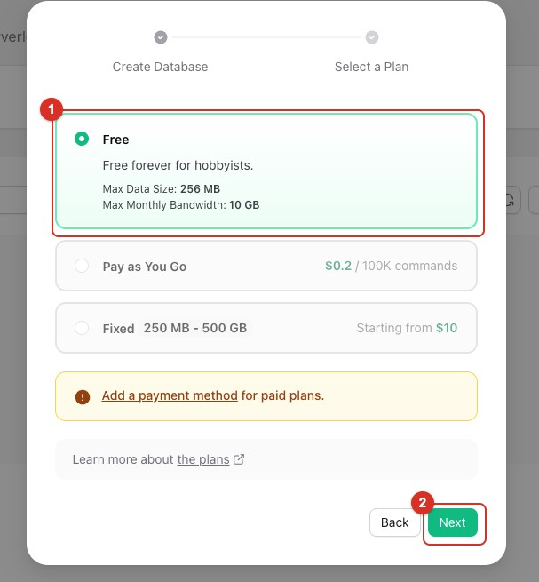
① Free — 256 MB dữ liệu. ② Next. Hai gói còn lại đòi thẻ thanh toán.- Màn tóm tắt: kiểm tên, region, và Monthly: $0 → Create
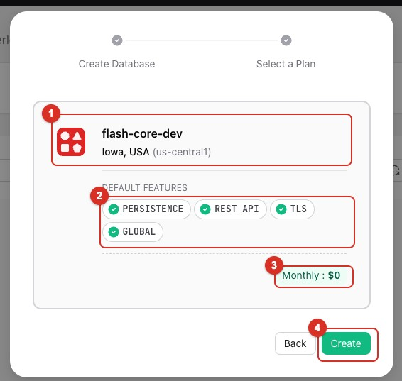
① Tên + Iowa, USA (us-central1). ② PERSISTENCE và TLS có sẵn trong gói. ③ Monthly: $0 — khác $0 là đang chọn nhầm gói. ④ Create.- Quay lại danh sách: database mới hiện với GCP · US-CENTRAL1 · Free Tier → bấm vào nó
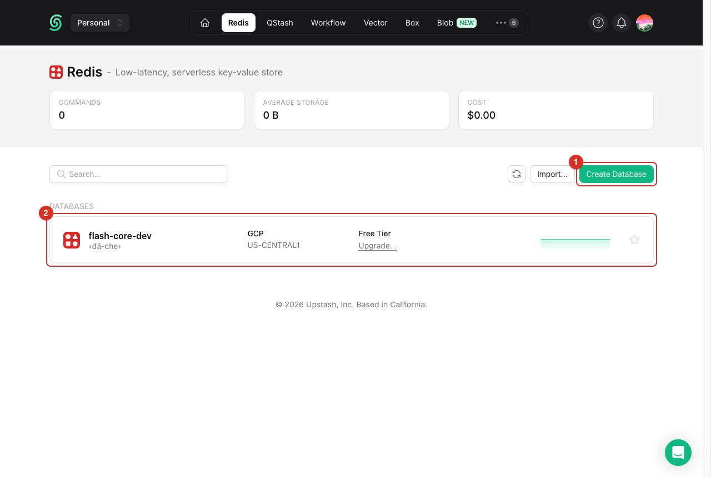
① Create Database — gói Free chỉ tạo được một cái. ② Database vừa tạo: GCP, US-CENTRAL1, Free Tier.- Tab Details: kiểm lại vị trí, hạn mức và TLS/SSL: Enabled
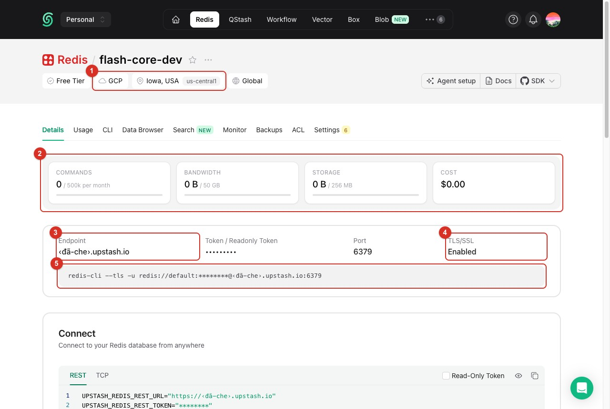
① GCP · Iowa, USA · us-central1. ② Hạn mức gói Free: 500k lệnh/tháng, 50 GB băng thông, 256 MB. ③ Endpoint (đã che). ④ TLS/SSL Enabled. ⑤ Lệnh redis-cli mẫu — chuỗi này làredis:// + cờ --tls, KHÔNG phải chuỗi cho app.
- Kéo xuống khung Connect → chọn tab TCP (không phải REST) → bấm nút copy ở góc phải. Chép được chuỗi dạng
rediss://default:<mật khẩu>@<endpoint>.upstash.io:6379. Bỏ dấu ngoặc kép và chữREDIS_URL=ở đầu — chỉ giữ phầnrediss://…
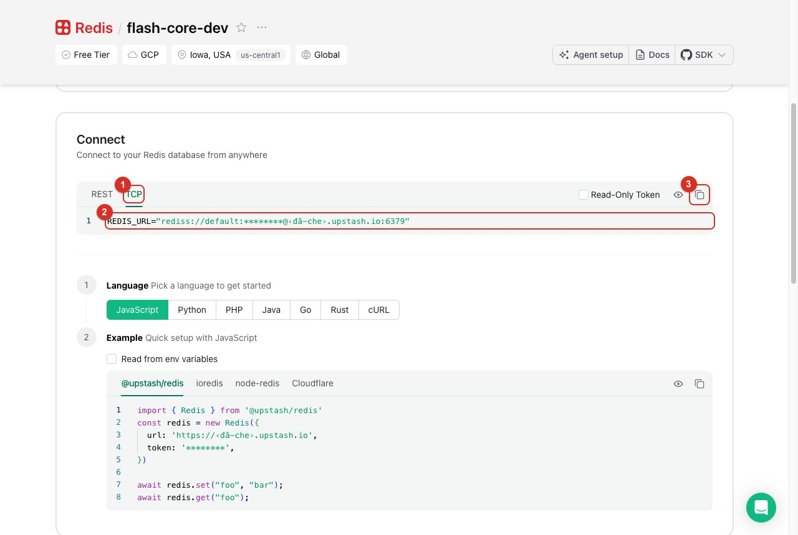
① Tab TCP. ② Chuỗirediss:// — hai chữ s. ③ Nút copy: chép chuỗi có mật khẩu thật. Không cần bấm nút con mắt bên cạnh.
- Tab Settings → mục Eviction phải TẮT (mặc định đã tắt — đừng bật)
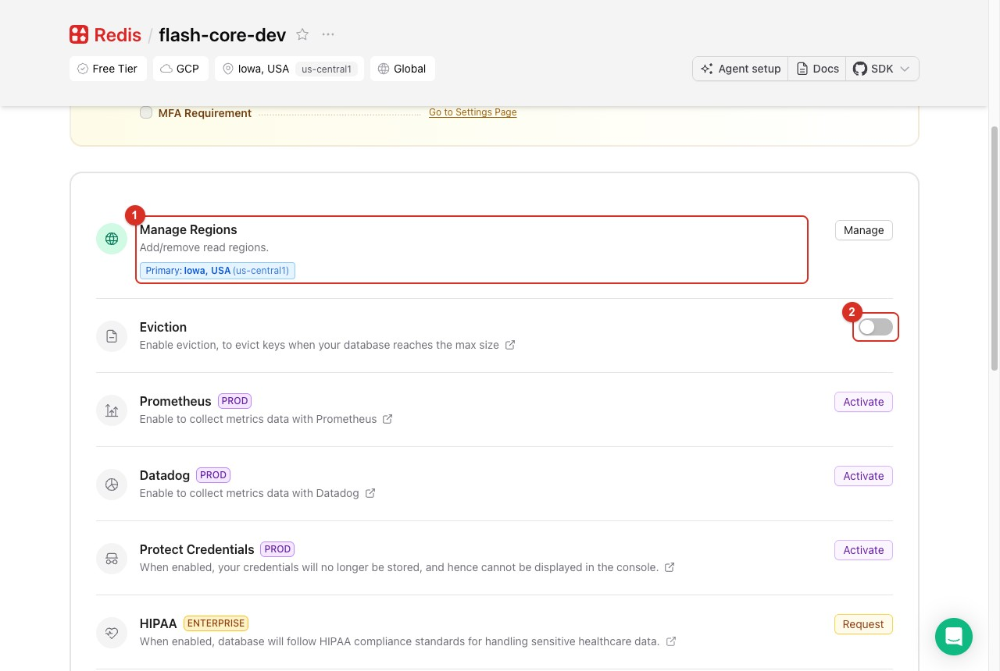
① Primary region: Iowa, USA (us-central1). ② Eviction — công tắc xám là TẮT, đây là trạng thái đúng.- Chuỗi ở bước 7 dán vào secret
REDIS_URLở §6. Không lưu nó vào.envhayTEST_REDIS_URLtrên máy dev.
⚠ Gói Free chỉ cho tạo MỘT database — bấm Create Database lần thứ hai sẽ gặp "You can create 1 database in free tier". Dựng cả dev lẫn prod (§18) thì đọc §5.1 trước khi tạo.
5.1 Vì sao cấu hình như vậy
Để làm gì: hiểu vì sao chọn Upstash thay Redis của GCP, và hạn mức nào sẽ chạm trần trước nhất.
- Upstash, không phải Memorystore (Redis của GCP). Memorystore tính tiền theo giờ máy bật, kể cả lúc không ai dùng — không có gói free, máy nhỏ nhất ~$35/tháng (⚠ ước lượng), và chỉ có IP nội bộ trong VPC nên Cloud Run phải dựng thêm đường vào VPC mới gọi được (§19). Dự án cần Redis chỉ vài giây mỗi 5 phút (worker) cộng lúc có người thử demo; Upstash tính theo số lệnh, có địa chỉ công khai + TLS, nên hợp đúng hình dạng đó. Đổi lại: Upstash là bên thứ ba, $300 credit không áp — nhưng gói free đủ dùng nên không sao.
- Bước 2 — region
us-central1, cùng Cloud Run. Mỗi lần đặt hàng chạm Redis nhiều lần (rate limit, tồn kho Lua, queue). Khác region thì mỗi lần là một chuyến xuyên vùng. - Bước 2 — không thêm read region. Database mới của Upstash là kiểu Global (nhãn GLOBAL ở màn tóm tắt): một region chính, có thể thêm bản sao chỉ-đọc ở vùng khác. App chỉ chạy ở một region, và BullMQ/rate limit/tồn kho đều ghi — bản sao chỉ-đọc không giúp gì mà còn tính thêm lệnh.
- Bước 3 — gói Free. Hạn mức thật đọc ở tab Details (bước 6): 500.000 lệnh/tháng, 50 GB băng thông, 256 MB dữ liệu. (Màn chọn gói lại ghi băng thông 10 GB — hai màn của Upstash không khớp nhau; con số ở Details là con số áp lên database.) Worker gọi mỗi 5 phút là ~8.600 lệnh/tháng chỉ để hỏi việc — còn rất nhiều chỗ, nhưng số lệnh là hạn mức chạm trần đầu tiên nếu có traffic thật (xem spec Phase 7 §Bài toán #4). Pay as You Go ($0,2/100k lệnh) và Fixed (từ $10/tháng) đều đòi thẻ, chỉ cần khi vượt gói Free.
- Bước 4 — PERSISTENCE. Upstash ghi dữ liệu xuống đĩa, nên Upstash khởi động lại thì job trong queue không mất. Không có nó thì Redis chỉ là bộ nhớ đệm — mất điện là mất việc nền đang chờ.
- Bước 7 — tab TCP, không phải REST. App nói giao thức Redis qua thư viện
ioredis(BullMQ bắt buộc dùng nó). Tab REST là địa chỉhttps://cho thư viện@upstash/redisgọi qua HTTP — app không dùng đường đó, dán nhầm vàoREDIS_URLthì app không nối được. - Bước 7 —
rediss://hai chữ s, không lấy chuỗiredis-cliở bước 6. Chữsthứ hai là TLS: Upstash nằm ngoài mạng Google nên dữ liệu đi qua internet công cộng — không có TLS là mật khẩu Redis đi dạng chữ thường. Lệnhredis-climẫu ghiredis://rồi bật TLS bằng cờ--tlsriêng;iorediskhông có cờ đó, nó đọc TLS từ chính chữrediss://. Chép thiếu một chữsthì/readytrả503mãi (§14). - Bước 8 — Eviction TẮT. Bật eviction thì khi gần đầy 256 MB, Upstash tự xoá bớt khoá để lấy chỗ, không phân biệt khoá nào quan trọng. Với dự án này khoá bị xoá có thể là:
- job trong queue BullMQ → email hoặc việc huỷ đơn quá hạn biến mất im lặng — đúng kiểu mất sự kiện mà Phase 4 dựng outbox để chống;
- tồn kho trong Redis (chiến lược Lua) → số tồn sai, có thể bán quá số hàng;
- bộ đếm rate limit → mất tác dụng chặn.
BullMQ yêu cầu Redis ở chế độ không tự xoá (
noeviction) và in cảnh báo nếu thấy khác. Để tắt thì đầy bộ nhớ là Redis báo lỗi — ồn ào, hiện ra ở/readyvà log, nhưng không mất dữ liệu. Dữ liệu demo cỡ vài MB thì gần như không bao giờ chạm 256 MB. - Bước 9 — chuỗi này chỉ nằm trong Secret Manager.
test/infra-fixture.tschạyFLUSHDB(xoá sạch Redis) đầu mỗi lần chạy integration test. TrỏTEST_REDIS_URLvào Upstash là xoá sạch dữ liệu trên cloud. Gói Free cũng không có IP Allowlist (Settings ghi Upgrade plan): ai có chuỗi này là vào được từ bất cứ đâu — mật khẩu trong chuỗi là hàng rào duy nhất. - ⚠ Chỉ một database free — hệ quả cho hai môi trường (§18). Dev và prod không được dùng chung một database:
deploy.ymlhiện đặtQUEUE_PREFIX=prodcho cả hai môi trường, nên worker của dev sẽ nuốt job của prod (đúng cái bẫyQUEUE_PREFIXđã gặp ở Phase 4), và khoá rate limit của hai bên cộng lẫn vào nhau. Ba cách, chưa chốt — cần Tâm quyết:- Chỉ dựng một môi trường — database này dành cho môi trường đó, bỏ qua §18 (đúng đường "chỉ muốn một môi trường" ở đầu hướng dẫn). Rẻ nhất, nhưng mất chỗ thử trước khi lên prod.
- Database thứ hai ở gói Pay as You Go ($0,2/100k lệnh — dev dùng ít thì vài xu/tháng). Phải gắn thẻ vào Upstash.
- Dùng chung một database nhưng tách tiền tố theo môi trường — phải sửa
deploy.yml(đặtQUEUE_PREFIXtheo môi trường) và code (tiền tố cho khoá rate limit, tồn kho). Đổi code nên cần spec trước.
6. Nạp 6 bí mật vào Secret Manager
Để làm gì: cất 6 chuỗi bí mật vào một chỗ có kiểm soát, để chúng không bao giờ phải nằm trong code hay trong repo.
Bảng tra nhanh — 6 bí mật, mỗi cái lấy giá trị từ đâu
Để làm gì: nhìn một lượt 6 bí mật phải tạo và giá trị mỗi cái lấy từ đâu, trước khi làm 6 lần cùng một form.
| # | Tên | Giá trị lấy từ đâu |
|---|---|---|
| 1 | JWT_ACCESS_SECRET | openssl rand -hex 32 |
| 2 | JWT_REFRESH_SECRET | openssl rand -hex 32 — chạy lần mới |
| 3 | PAYMENT_WEBHOOK_SECRET | openssl rand -hex 32 — chạy lần mới |
| 4 | CSRF_SECRET | openssl rand -hex 32 — chạy lần mới |
| 5 | REDIS_URL | Chuỗi rediss://… chép ở §5 |
| 6 | DATABASE_URL | Ghép tay: postgresql://flashcore:<DB_PASS>@localhost/flashcore?host=/cloudsql/<SQL_INSTANCE> |
Vì sao 4 khoá đầu mỗi cái chạy openssl một lần riêng, không dùng chung một chuỗi: mỗi khoá canh một cánh cửa khác nhau. Dùng chung JWT_ACCESS_SECRET với JWT_REFRESH_SECRET thì một refresh token trở thành access token hợp lệ — vòng xoay token của Phase 1 mất hết tác dụng.
Vì sao dài ≥32 ký tự: validateEnv (Zod) chặn ngay lúc khởi động nếu ngắn hơn, nên khoá yếu làm app chết lúc boot chứ không âm thầm chạy. openssl rand -hex 32 cho 64 ký tự — dư.
⚠
DATABASE_URL_MIGRATEKHÔNG thuộc mục nàyNó trông y hệt
DATABASE_URLnên rất dễ tạo nhầm vào Secret Manager. Nhưng Cloud Run không bao giờ đọc nó —deploy.ymllấy nó từsecrets.DATABASE_URL_MIGRATEcủa GitHub Environment (§8 bước 3), lúc bước migrate chạy trên runner.Tạo nhầm vào đây thì không có lỗi nào báo: nó nằm im, không ai đọc, và chiếm một trong 6 slot miễn phí của Secret Manager. Lỡ tạo rồi thì mở nó → Delete secret.
Cách nhớ: Secret Manager chứa thứ ứng dụng đang chạy cần.
DATABASE_URL_MIGRATElà thứ CI cần, mà CI không chạy trên GCP.
Các biến của GitHub (GCP_PROJECT_ID, GCP_WIF_PROVIDER, GCP_SERVICE_ACCOUNT, GCP_SQL_INSTANCE, GCP_REGION) và secret DATABASE_URL_MIGRATE không nạp ở đây — chúng khai bên GitHub, xem §8.
- ☰ → Security → Secret Manager → tab Secrets (không phải Regional secrets) → Create secret
- Sinh giá trị cho 4 khoá ngẫu nhiên: mở terminal (hoặc Cloud Shell — nút
>_trên thanh trên cùng của Console) và chạyopenssl rand -hex 32. Mỗi secret chạy một lần, ra một chuỗi riêng - Nửa trên của form:
- Name: tên secret, gõ đúng từng chữ (bảng dưới)
- Type: không tick Set secret type
- Secret value: dán giá trị — kiểm không có dấu cách hay xuống dòng ở cuối. Bỏ qua ô Upload file
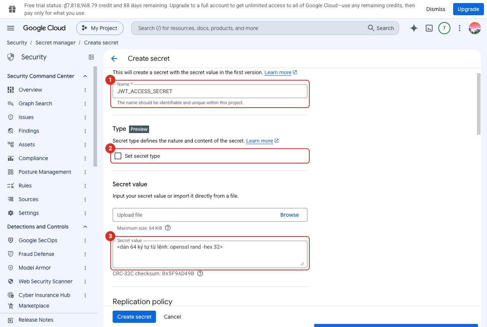
① Name — đúng chữ hoa, gạch dưới. ② Set secret type — để trống. ③ Secret value — ảnh chụp đang điền chữ mẫu; chỗ này dán chuỗi thật.- Kéo xuống, giữ nguyên ba mục mặc định:
- Replication policy: không tick Manually manage locations for this secret
- Encryption: giữ Google-managed encryption key
- Rotation: không tick Set rotation period
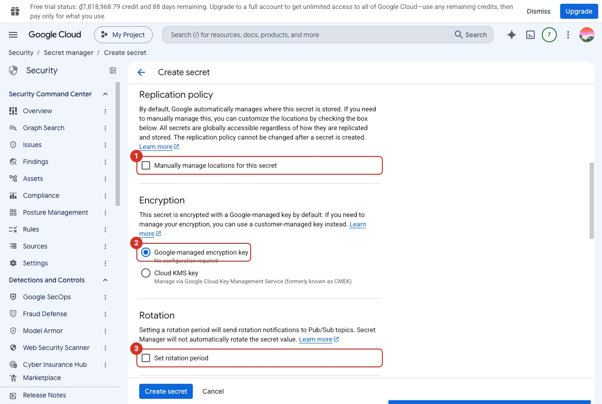
① Không tick Manually manage locations. ② Google-managed encryption key. ③ Không tick Set rotation period.- Kéo tiếp: không tick Set expiration date, không tick Set duration for delayed destruction; Labels, Tags, Annotations bỏ trống → Create secret
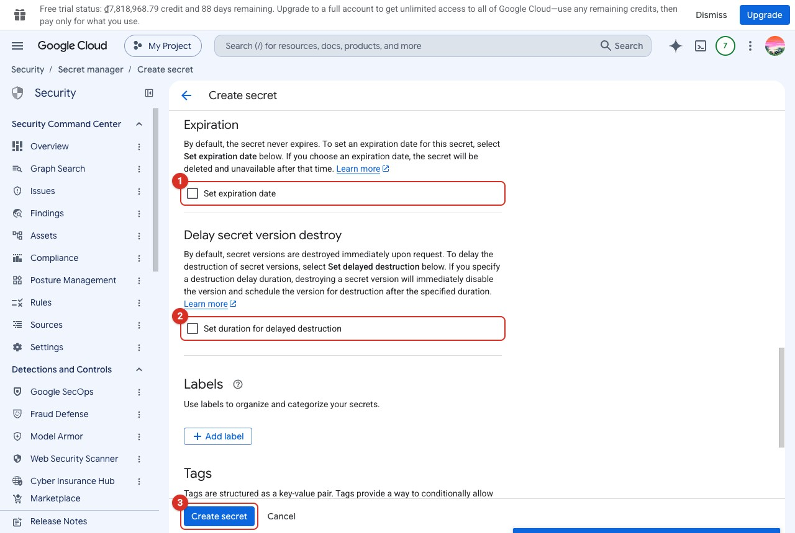
① Set expiration date — để trống, nếu không secret tự bị xoá. ② Delayed destruction — để trống. ③ Create secret.- Lặp lại bước 3–5 cho đủ 6 secret:
# Name Secret value 1 JWT_ACCESS_SECRETmột lần chạy openssl rand -hex 322 JWT_REFRESH_SECRETmột lần chạy mới 3 PAYMENT_WEBHOOK_SECRETmột lần chạy mới 4 CSRF_SECRETmột lần chạy mới 5 REDIS_URLchuỗi rediss://...chép ở §5 bước 7 (tab TCP, đã bỏ ngoặc kép)6 DATABASE_URLpostgresql://flashcore:<DB_PASS>@localhost/flashcore?host=/cloudsql/<SQL_INSTANCE>— thay hai chỗ<…>bằng giá trị chép ở §4.1 bước 7 - Quay lại danh sách Secrets: phải thấy đủ 6 dòng, đúng tên
Làm bằng lệnh: §6 bản lệnh.
6.1 Vì sao cấu hình như vậy
Để làm gì: hiểu vì sao bí mật phải nằm ở Secret Manager chứ không ở biến môi trường, và xoay khoá thì ảnh hưởng ai.
- Secret Manager, không phải biến môi trường thường của Cloud Run. Biến môi trường hiện nguyên văn cho bất kỳ ai xem được cấu hình service (kể cả người chỉ có quyền Viewer ở §18.2). Secret Manager tách quyền đọc ra riêng (§7.1.3 cấp cho đúng một danh tính), có version để xoay khoá, và ghi lại ai đọc lúc nào.
- Đúng 6 tên này, viết hoa, không đổi.
deploy.ymlgắn secret vào container theo tên, và config của app validate bằng Zod lúc khởi động: thiếu hoặc sai tên một biến là container chết ngay với danh sách biến thiếu trong log. - Bước 1 — tab Secrets, không phải Regional secrets.
deploy.ymlgắn secret bằng tên ngắn (DATABASE_URL:latest), tức là secret toàn cục của project. Secret tạo ở tab Regional secrets nằm ở một chỗ khác, có đường dẫn khác — Cloud Run sẽ báo không tìm thấy secret. - Bước 2 — tạo trên máy nào cũng được.
openssl randchỉ sinh ra một chuỗi ngẫu nhiên, không gắn với máy. Dán vào Secret Manager rồi thì chuỗi sống trên GCP; app đọc từ đó, không bao giờ hỏi lại máy của anh — không cần cất nó ở đâu khác (cần xem lại: mở secret → version → View secret value). Nhưng không chép giá trị từ.envở máy dev lên: local, dev và prod phải có bộ khoá khác nhau, lộ một môi trường không kéo theo môi trường khác. - Bước 2 và 6 —
openssl rand -hex 32, mỗi secret một lần chạy. 32 byte ngẫu nhiên = 256 bit, in ra thành 64 ký tự hex — vượt yêu cầu ≥ 32 ký tự của config. Không dùng chung một giá trị cho hai secret: mỗi khoá bảo vệ một thứ khác nhau (access token, refresh token, chữ ký webhook, CSRF), dùng chung thì lộ một là lộ cả bốn, và không xoay riêng được cái nào. - Bước 3.2 — không đặt Secret type. Mục này đang là Preview và chỉ gắn nhãn phân loại cho secret; app không đọc nó. Tính năng Preview có thể đổi hành vi — không dùng khi không cần.
- Bước 3.3 — không có ký tự thừa ở cuối. Secret lưu đúng từng ký tự được dán vào. Một ký tự xuống dòng thừa ở cuối
DATABASE_URLlàm đường dẫn socket sai — app báo "không nối được DB" chứ không báo "chuỗi có ký tự lạ", nên đây là lỗi mất cả buổi để tìm. - Bước 4 — Replication tự động. Google tự chọn nơi lưu bản sao; dự án không có yêu cầu dữ liệu phải nằm ở vùng nào. Chọn quản lý tay thì phải tự giữ danh sách vùng mà không được gì thêm — và form ghi rõ không đổi được sau khi tạo.
- Bước 4 — Google-managed encryption key. Secret vẫn được mã hoá, chỉ là Google giữ khoá. Cloud KMS key (CMEK) là tự quản khoá — dùng khi quy định bắt buộc phải tự thu hồi được khoá; đổi lại phải dựng thêm KMS, tốn tiền theo khoá, và lỡ xoá khoá là mất secret vĩnh viễn.
- Bước 4 — không đặt Rotation period. Form nói rõ: nó chỉ gửi thông báo qua Pub/Sub, "Secret Manager will not automatically rotate the secret value". Không có gì nghe thông báo đó thì bật lên chỉ là thêm một topic Pub/Sub vô dụng. Xoay khoá ở dự án này là việc làm tay (dưới).
- Bước 5 — KHÔNG đặt Expiration. Hết hạn thì secret bị xoá — container khởi động lần sau thiếu biến và chết ngay, đúng lúc không ai nhớ đã đặt ngày đó.
- Bước 5 — không đặt delayed destruction. Nó giữ version cũ thêm một thời gian sau khi bấm huỷ — tức là version cũ vẫn còn đó, và free tier chỉ có 6 version đang hoạt động (dưới).
- Bước 6 dòng 6 —
?host=/cloudsql/...và chữlocalhost.?host=/cloudsql/...bảo thư việnpgnối qua Unix socket thay vì TCP; phầnlocalhostchỉ để chuỗi đúng cú pháp URL. Socket đó chỉ tồn tại khi service được deploy với--set-cloudsql-instances—deploy.ymlđã có cờ này. Đi qua socket nghĩa là đi qua connector có xác thực IAM (§4.4.2), không qua IP. - Free tier là 6 version đang hoạt động, và dự án có đúng 6 bí mật — vừa khít. Mỗi lần xoay khoá phải huỷ version cũ (mở secret → danh sách version → ⋮ ở version cũ → Destroy, ⚠ nhãn có thể khác), nếu không version thứ 7 bắt đầu tính tiền.
- Hệ quả khi xoay từng khoá: xoay
CSRF_SECRETan toàn — token cũ thành không hợp lệ, middleware phát lại ở request kế tiếp, không ai bị đăng xuất. XoayJWT_*thì mọi người phải đăng nhập lại. Đổi secret xong phải deploy lại service — Secret Manager không tự đẩy giá trị mới vào container đang chạy.
7. Service account + Workload Identity Federation
Để làm gì: tạo danh tính cho máy — một cái để container chạy dưới nó, một cái để GitHub Actions deploy — và cho GitHub mượn được danh tính đó mà không cần file khoá nào.
Đây là mục rắc rối nhất. Làm một lần, và không bao giờ phải tạo file khoá JSON nào. §7.1–§7.4 là các bước; §7.5 giải thích service account là gì và vì sao chia quyền như vậy — lần đầu làm thì đọc §7.5 trước.
7.1 Tạo hai service account
Để làm gì: tạo hai danh tính máy, và cho CI được mượn danh tính runtime.
Cả dự án cần ba service account. Hai cái đầu tạo ở mục này, cái thứ ba tạo ở §10 (lúc đã có worker job để hẹn lịch). Quyền của từng cái ở §7.5.3.
| Service account name | Ai chạy với tư cách nó | Tạo ở | Description nên gõ |
|---|---|---|---|
flash-core-runtime | Container Cloud Run (API + worker job) lúc đang chạy | §7.1.1 | Runtime identity for Cloud Run service and worker job. Reads its own 6 secrets, connects to Cloud SQL. |
github-deployer | GitHub Actions, qua Workload Identity Federation | §7.1.2 | CI identity for GitHub Actions (repo phamtam215/flash-core) via WIF. Pushes images, deploys Cloud Run, runs migrations. No key files. |
scheduler-invoker | Cloud Scheduler, mỗi 5 phút gọi worker job | §10 | Cloud Scheduler identity. Only invokes the flash-core-worker job every 5 minutes. |
Vì sao nên gõ Description dù Console cho bỏ trống: sáu tháng sau mở trang Service Accounts, anh chỉ thấy ba dòng email giống nhau. Description là chỗ duy nhất trả lời "cái này của việc gì, xoá được không" — và câu đó quyết định lúc dọn dẹp. Viết bằng tiếng Anh vì đó là thứ người khác (hoặc công cụ quét IAM) đọc, không phải tài liệu riêng của anh.
Vì sao mô tả nên nói giới hạn chứ không chỉ công dụng ("Only invokes…", "No key files"): nó biến description thành một lời hứa kiểm được — thấy scheduler-invoker có thêm role lạ là biết ngay có gì sai, không phải đi tra lại lịch sử.
7.1.1 flash-core-runtime — danh tính mà container chạy dưới
- ☰ → IAM & Admin → Service Accounts → Create service account
- Service account name
flash-core-runtime→ Create and continue - Bước Grant this service account access to project: role Cloud SQL Client → Continue → Done
⚠ Bước 3 là bước hay bị bấm qua nhất cả §7. Nhãn của nó ghi (optional), và bỏ trống thì service account vẫn tạo ra bình thường, danh sách vẫn thấy đủ hai cái — không có dấu hiệu nào sai. Nó chỉ lộ ra lúc deploy xong, container báo không nối được database, và thông báo đó không nhắc một chữ nào tới IAM.
Kiểm ngay: ☰ → IAM & Admin → IAM, tìm dòng
flash-core-runtime@…— phải thấy nó với role Cloud SQL Client. Không thấy dòng nào nghĩa là bước 3 đã bị bỏ qua. Vá bằng Grant access → New principalsflash-core-runtime@…· role Cloud SQL Client → Save.
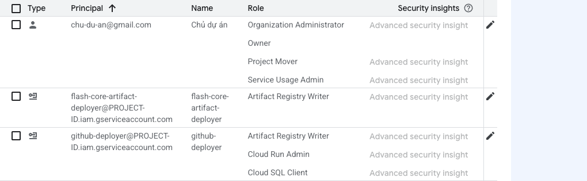
Ảnh chụp một project đang sai:github-deployer có đủ 3 role ①, nhưng không có dòng nào cho flash-core-runtime — bước 3 đã bị bỏ qua. Dòng flash-core-artifact-deployer ② là service account tạo thừa, github-deployer đã có sẵn Artifact Registry Writer rồi.
7.1.2 github-deployer — danh tính của CI
- ☰ → IAM & Admin → Service Accounts → Create service account
- Service account name
github-deployer(ô Service account ID tự điền theo) → kiểm kỹ tên → Create and continue (⚠ bấm là tạo luôn, ID không đổi được)
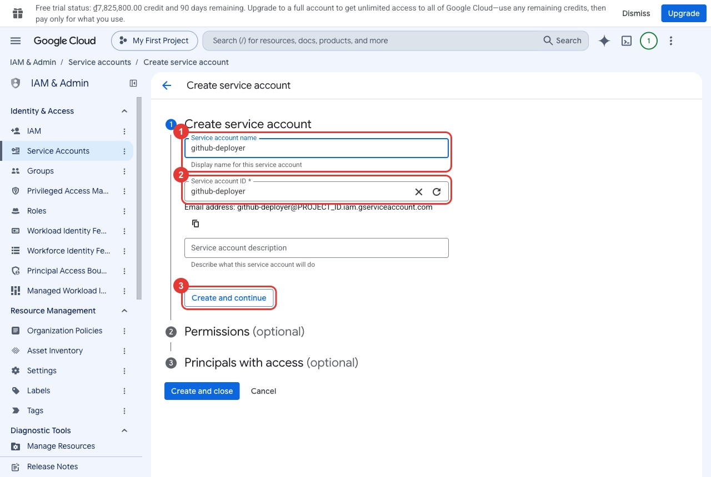
① Service account name. ② Service account ID tự điền theo — kiểm kỹ trước khi đi tiếp. ③ Create and continue — bấm là tạo luôn.- Bước Permissions (optional): chọn role, bấm Add another role để thêm cái tiếp, đủ 3 role:
- Cloud Run Admin
- Artifact Registry Writer
- Cloud SQL Client
- Continue → bỏ qua bước Principals with access → Done (⚠ nhãn hai nút này theo tài liệu). Chép email của nó (
github-deployer@<PROJECT_ID>.iam.gserviceaccount.com). - Cho
github-deployerđược "khoác"flash-core-runtime(vì sao cần bước này: §7.5.4):- Service Accounts → bấm
flash-core-runtime→ tab Principals with access - Grant access → New principals
github-deployer@…· role Service Account User - Save
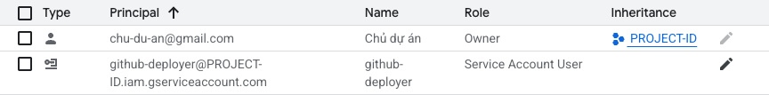
Làm đúng thì trang củaflash-core-runtimehiện dònggithub-deployer@…với role Service Account User. DòngOwnerphía trên là của chính anh, thừa hưởng từ project — không phải thứ vừa thêm. - Service Accounts → bấm
7.1.3 Cho flash-core-runtime đọc đúng 6 secret của nó
Làm sau §6 (lúc secret đã tồn tại):
- Secret Manager → tick cả 6 secret → nút Show info panel (hoặc Permissions)
- Add principal →
flash-core-runtime@…· role Secret Manager Secret Accessor - Save (⚠ vị trí nút theo tài liệu)
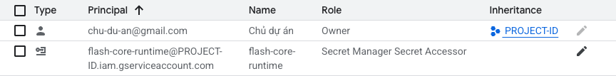
Mở một secret bất kỳ → tab Permissions để kiểm: phải thấyflash-core-runtime@… với role Secret Manager Secret Accessor. Quyền gắn trên từng secret, nên phải có đủ ở cả 6 — thiếu một cái thì app chết lúc khởi động vì đúng biến đó rỗng.
7.2 Pool và provider
Để làm gì: dạy GCP cách nhận ra token do GitHub Actions phát, và chỉ chấp nhận token của đúng repo này.
☰ → IAM & Admin → Workload Identity Federation → Get started (trang New workload provider and pool, 3 bước, chỉ lưu khi bấm Save ở cuối):
- Create an identity pool:
- Name
github(dòng Pool ID tự thànhgithub) - Giữ Enabled pool bật
- Continue
- Name
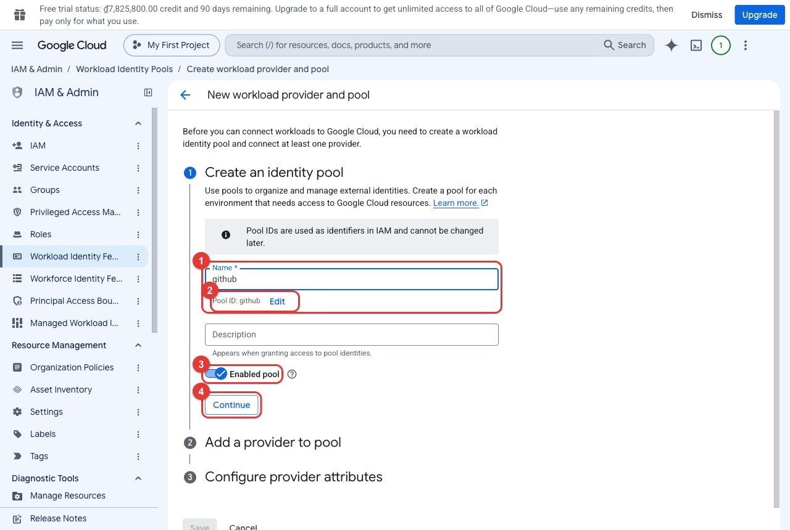
① Name. ② Pool ID tự sinh — không đổi được sau này. ③ Enabled pool giữ bật. ④ Continue.- Add a provider to pool:
- Select a provider OpenID Connect (OIDC)
- Provider name
github-provider(dòng Provider ID tự thànhgithub-provider) - Issuer (URL)
https://token.actions.githubusercontent.com - Bỏ qua ô JWK file
- Audiences giữ Default audience → chép ngay dòng đường dẫn bên dưới (có nút copy) — §7.4 dùng nó
- Continue
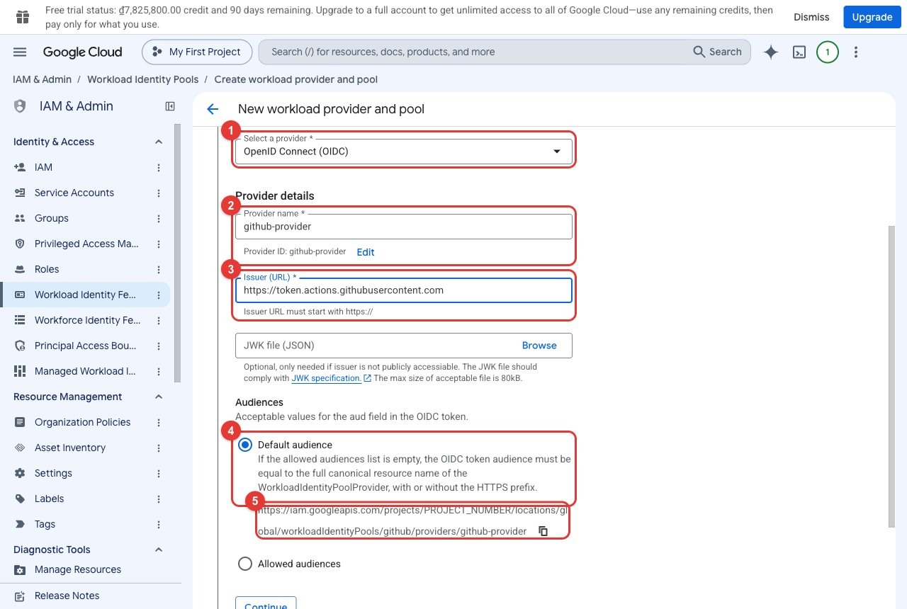
① OpenID Connect (OIDC). ② Provider name + Provider ID tự sinh. ③ Issuer (URL). ④ Default audience. ⑤ Dòng đường dẫn cần chép cho §7.4 (trên màn hình thật là số project của anh, ở đây đã che thành PROJECT_NUMBER).- Configure provider attributes:
- Ô Google 1 đã khoá sẵn
google.subject→ ô OIDC 1 điềnassertion.sub - Add mapping → Google 2
attribute.repository, OIDC 2assertion.repository - Mục Attribute conditions → Add condition → ô Condition CEL điền
assertion.repository=='phamtam215/flash-core'(đúng tên repo của anh) - Save
- Ô Google 1 đã khoá sẵn
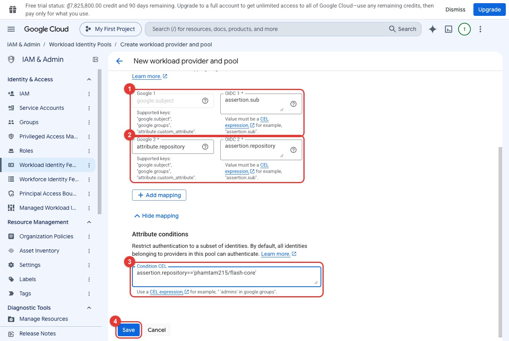
① Google 1 = google.subject, OIDC 1 = assertion.sub. ② Dòng thêm bằng Add mapping. ③ Condition CEL — dòng quan trọng nhất cả bước. ④ Save — chỉ tới đây mới thực sự tạo pool.7.3 Cho đúng repo này mượn service account
Để làm gì: khoá lớp thứ hai — chỉ repo này mới khoác được github-deployer.
- Trên trang pool
github→ Grant access → chọn Grant access using service account impersonation — không chọn ô đầu Grant access using federated identities, dù Google gắn chữ (Recommended) cho nó (vì sao: §7.5.7) - Select service account →
github-deployer - Select principals: dropdown Attribute name chọn
repository· ô Attribute value gõphamtam215/flash-core→ Save⚠ Một số bản Console hỏi trước bằng hai lựa chọn All identities in the pool / Only identities matching the filter — chọn cái thứ hai rồi mới hiện hai ô trên. Bản mới đưa thẳng dropdown, bỏ qua bước hỏi. Kết quả giống nhau.
- Hiện hộp Configure your application thì bấm Dismiss
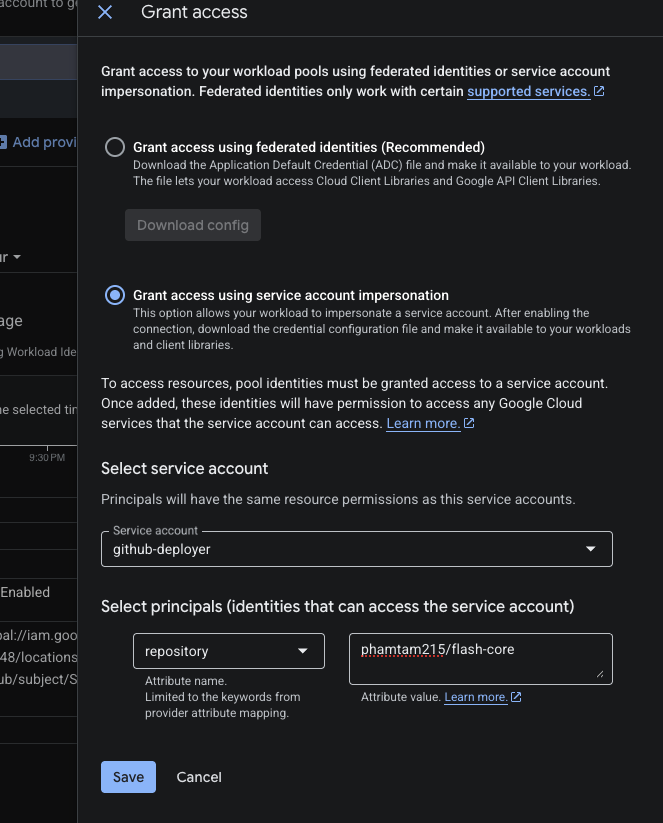
① Ô trên mang chữ (Recommended) nhưng không chọn — nó bắt tải file ADC về. ② Chọn service account impersonation. ③github-deployer, không phải runtime. ④ ⑤ Lọc repository = <user>/<repo> — bỏ trống ô này là mọi danh tính trong pool đều mượn được.
(Đối chiếu với tài liệu WIF cho deployment pipeline.)
7.4 Giá trị dán vào GitHub
Để làm gì: lấy ra hai chuỗi mà §8 sẽ dán sang GitHub.
Dùng ở §8. Lấy dòng đã chép ở §7.2 bước 2, bỏ phần https://iam.googleapis.com/ ở đầu và thay <providerId> bằng github-provider. Kết quả phải có dạng:
GCP_WIF_PROVIDER = projects/<PROJECT_NUMBER>/locations/global/workloadIdentityPools/github/providers/github-provider
GCP_SERVICE_ACCOUNT = github-deployer@<PROJECT_ID>.iam.gserviceaccount.comLàm bằng lệnh: §7 bản lệnh.
7.6 Tự kiểm — 8 dòng, làm trước khi sang §8
Để làm gì: bắt các lỗi của §7 ngay bây giờ, vì gần hết chúng không báo gì cho tới lúc deploy, và lúc đó thông báo lỗi không chỉ về đây.
| # | Mở ở đâu | Phải thấy |
|---|---|---|
| 1 | IAM & Admin → Service Accounts | Đúng 2 dòng của dự án: flash-core-runtime, github-deployer (cộng …-compute@developer của Google). Dòng lạ nào khác là tạo thừa — xoá |
| 2 | Cùng trang, cột Key ID | No keys ở mọi dòng. Có khoá là đi ngược ADR-014 |
| 3 | IAM & Admin → IAM, dòng github-deployer | Đúng 3 role: Artifact Registry Writer, Cloud Run Admin, Cloud SQL Client |
| 4 | Cùng trang, dòng flash-core-runtime | Có dòng này, role Cloud SQL Client. Không thấy dòng nào = bỏ sót §7.1.1 bước 3 |
| 5 | Cùng trang, dòng github-deployer | KHÔNG có Secret Manager Secret Accessor, Owner, Editor, Service Account User |
| 6 | SA flash-core-runtime → tab Principals with access | github-deployer@… với role Service Account User |
| 7 | SA github-deployer → tab Principals with access | Một dòng Workload Identity User, principal chứa …/github/…flash-core |
| 8 | Workload Identity Federation → pool github → provider github-provider | Issuer https://token.actions.githubusercontent.com; mapping có attribute.repository=assertion.repository; Attribute condition assertion.repository=='<user>/<repo>' |
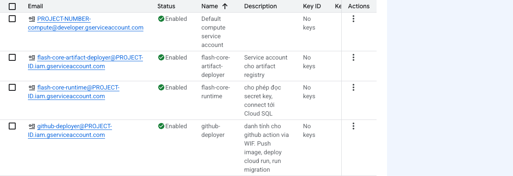
Dòng 1 và 2 của bảng trên nhìn ở đây. Cột Key ID phải ghi No keys ở mọi dòng. Ảnh này cũng đang sai một chỗ:flash-core-artifact-deployer là service account tạo thừa, không nằm trong kế hoạch — xoá đi. …-compute@developer thì của Google, để nguyên.
<PROJECT_NUMBER>-compute@developer.gserviceaccount.comlà gì, có xoá không. Google tự tạo nó khi bật Compute Engine API. Nó là danh tính mặc định của VM Compute Engine, và là danh tính dự phòng mà Cloud Run dùng nếu deploy mà không chỉ định--service-account.Đừng xoá. Vài dịch vụ âm thầm rơi về nó, và lúc đó lỗi báo ra là "service account không tồn tại" ở một chỗ chẳng liên quan gì.
deploy.ymlcủa dự án luôn ghi rõ--service-account flash-core-runtime@…, nên đường dự phòng đó không bao giờ được đi.Thứ phải canh không phải sự tồn tại của nó, mà là role của nó. Trước đây Google tự cấp cho nó
Editorở mức project — khi đó bất kỳ ai deploy được cũng khoác được nó để làm mọi thứ trong project (§7.5.4). Tổ chức bật Secure by Default thì Google không cấp nữa, và dấu hiệu đúng là nó KHÔNG xuất hiện trên trang IAM. Thấy nó ở đó kèmEditorhayOwnerthì gỡ role, đừng gỡ account.Muốn chắc hơn nữa: dấu ⋮ → Disable service account. Tắt thì bật lại được, xoá thì không.
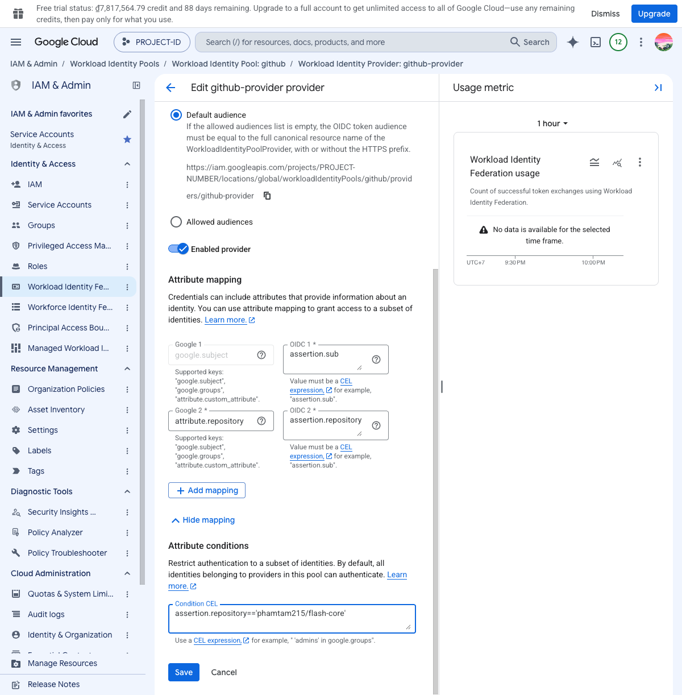
Dòng 8 nhìn ở đây, một trang có đủ ba thứ: ① Enabled provider đang bật · ② hai cặp mapping (google.subject ← assertion.sub, attribute.repository ← assertion.repository) · ③ Condition CEL — dòng quyết định. Mở trang này để xem, đừng bấm Save.
Vì sao dòng 5 kiểm ngược (thứ KHÔNG được có) chứ không chỉ kiểm thứ phải có: thiếu quyền thì CI đỏ, tự lộ ra ngay lần deploy đầu. Thừa quyền thì mọi thứ vẫn xanh — không ai biết cho tới lúc có sự cố. Service Account User ở mức project là ví dụ rõ nhất: CI vẫn deploy ngon, nhưng nó khoác được mọi service account trong project, kể cả cái mặc định của Compute thường mang quyền Editor (§7.5.4).
Vì sao dòng 8 quan trọng hơn cả bảy dòng kia cộng lại: thiếu Attribute condition thì bất kỳ repo GitHub nào trên đời cũng đổi token của họ lấy quyền vào project này — và không có triệu chứng nào cả, deploy của anh vẫn chạy đúng.
Muốn kiểm bằng lệnh thay vì bấm 8 chỗ: xem bản lệnh §7.
7.5 Vì sao cấu hình như vậy
Để làm gì: hiểu service account là gì và vì sao quyền phải chia thành nhiều lớp như vậy.
7.5.1 Service account là gì — và khác tài khoản của anh ở chỗ nào (nền cho cả §7)
Google gọi cả hai là "account", và đó là nguồn gốc của mọi nhầm lẫn. Chúng là hai thứ khác hẳn nhau:
Tài khoản người (ban@gmail.com) | Service account (github-deployer@...) | |
|---|---|---|
| Là gì | Một con người | Một vai diễn mà code mặc vào |
| Đăng nhập Console | Có | Không bao giờ |
| Mật khẩu, 2FA | Có | Không có |
| Nhận email | Có | Không |
| Ai dùng nó | Chính người đó | Bất kỳ đoạn code nào được phép mượn |
| Nghỉ việc thì sao | Xoá tài khoản ⇒ mất hết quyền | Không liên quan — hệ thống vẫn chạy |
Cách nhớ gọn nhất: tài khoản người trả lời câu "ai đang ngồi trước màn hình", service account trả lời câu "đoạn code này đang chạy với tư cách gì".
Và service account KHÔNG phải là "quyền" — nó là danh tính. Quyền là role gắn vào danh tính đó. Anh đã quen chuyện này ở SQL:
CREATE USER app_user; -- danh tính ← service account
GRANT SELECT ON orders TO app_user; -- quyền ← roleapp_user không là quyền SELECT; nó là cái tên mà quyền được gắn vào. REVOKE đi thì nó vẫn là app_user, chỉ không làm được gì nữa. Service account y hệt: tạo ra thì nó không có quyền gì cả — đó là lý do §7.1 tạo account ở một bước rồi gán role ở bước khác.
Trong IAM, cả người lẫn service account đều gọi chung là member (principal), và IAM chỉ hỏi đúng một câu: ai (member) — được làm gì (role) — ở đâu (resource). Ô "ai" nhận cả hai loại, nên người mới vào dự án và service account là hai member khác nhau trong cùng một bảng, không phải cái này chứa cái kia.
7.5.2 Service account vừa là danh tính, vừa là tài sản (nền cho §7.1.2 bước 5 và §7.3)
- Như một danh tính: nó được cấp quyền, y hệt một người.
github-deployercórun.adminnghĩa là nó deploy được Cloud Run. - Như một tài sản: nó thuộc về project, và phải có ai đó được phép mượn nó. Quyền mượn chính là
roles/iam.serviceAccountUser(hoặcworkloadIdentityUserkhi người mượn là GitHub).
Nghĩa là có hai lớp phải đúng thì một việc mới chạy được:
GitHub Actions ──(1) được phép MƯỢN──► github-deployer ──(2) có QUYỀN──► deploy Cloud Run
(workloadIdentityUser) (run.admin)Thiếu lớp (1) thì CI báo "unable to get credentials"; thiếu lớp (2) thì CI mượn được nhưng bị từ chối ở bước deploy. Hai lỗi hoàn toàn khác nhau, và đọc thông báo là phân biệt được.
7.5.3 Ba service account, và vì sao không dùng chung một cái (§7.1)
| Service account | Ai chạy với tư cách nó | Quyền |
|---|---|---|
github-deployer | GitHub Actions (qua WIF) | run.admin, artifactregistry.writer, cloudsql.client, và serviceAccountUser chỉ trên flash-core-runtime |
flash-core-runtime | Container Cloud Run lúc đang chạy | cloudsql.client, và đọc secret theo từng secret một |
scheduler-invoker (§10) | Cloud Scheduler khi gọi worker job | run.invoker |
Tách ba cái vì mỗi cái chỉ chết một kiểu: github-deployer bị lộ thì kẻ tấn công deploy được code lạ nhưng không đọc được secret; flash-core-runtime bị lộ thì đọc được secret nhưng không deploy được gì. Gộp thành một là mở toang cả hai cửa. Đây cũng là mẫu của hệ thống công ty (ADR-017): mỗi việc một danh tính, quyền gắn vào đúng tài nguyên chứ không gắn cả project.
Từng role của github-deployer (§7.1.2 bước 3) và lý do:
- Cloud Run Admin — tạo/cập nhật service + hai Cloud Run Job, và chuyển traffic lúc rollback. Cloud Run Developer deploy được nhưng không sửa được IAM của service, mà
deploy.ymldùng--allow-unauthenticated(cho phép ai cũng mở được trang) — cờ đó chính là một thay đổi IAM. - Artifact Registry Writer — đẩy image. Writer chứ không Admin: CI không cần xoá kho hay sửa cleanup policy.
- Cloud SQL Client — mở Cloud SQL Auth Proxy trên runner để chạy
prisma migrate deploy. Không có role này thì bước migrate đỏ ở chỗ mở proxy. - Không có Secret Manager Secret Accessor. CI chỉ bảo Cloud Run "container này dùng secret X"; người đọc secret là
flash-core-runtimelúc container chạy. Hệ thống công ty cũng vậy: build SA không có quyền secret nào.
Các lựa chọn khác trong §7.1:
- §7.1.1 bước 3 — runtime chỉ có Cloud SQL Client, không cấp đọc secret ở đây. Cấp ở màn này là cấp ở mức project — đọc được mọi secret, kể cả secret thứ 7 mà sau này tạo cho việc khác. §7.1.3 cấp lên từng secret, nên container chỉ đọc đúng 6 cái của nó.
- §7.1.2 bước 4 — bỏ qua bước Principals with access lúc tạo. Hai bước cuối của form hỏi hai câu ngược chiều nhau, rất dễ lẫn:
Bước Câu hỏi Chiều Permissions Service account này được làm gì trong project? SA → project Principals with access Ai được điều khiển service account này? người/SA khác → SA Hai ô trong bước Principals with access:
Ô Cấp quyền gì Hệ quả Service account users role "Dùng ké" — lấy SA này để deploy app hoặc gắn vào VM Không sở hữu, chỉ mượn danh tính ( iam.serviceAccountUser)Service account admins role Toàn quyền quản lý: đổi tên, sửa quyền, xoá — và tạo được file khoá JSON Xem cảnh báo dưới Bỏ qua lúc tạo vì thứ tự: khi tạo
flash-core-runtimethìgithub-deployerchưa tồn tại, nên chưa có gì để điền. Bước 5 cấp quyền mượn qua tab Principals with access của chínhflash-core-runtime— kết quả giống hệt, chỉ khác lúc làm. - ⚠ Đừng cấp Service account admins role cho ai, kể cả chính mình. Người có quyền đó tạo được file khoá JSON — mở lại đúng cánh cửa mà ADR-014 đóng. Anh là Owner nên vẫn sửa được service account khi cần. Nhớ gọn: users = được mượn. admins = được phát chìa khoá.
- §7.1.2 bước 5 — Service Account User cấp trên đúng
flash-core-runtime, không cấp ở mức project. Khi deploy, CI phải nói "service này chạy dưới danh tínhflash-core-runtime" — việc đó cần quyền khoác danh tính ấy (iam.serviceaccounts.actAs). Cấp ở mức project thì CI khoác được mọi SA trong project, kể cả SA có quyền rộng hơn nó — một đường leo thang quyền. Thiếu bước này thì deploy đỏ với Permission … iam.serviceaccounts.actAs (§14).
7.5.4 Vì sao CI phải xin phép để "khoác" runtime (§7.1.2 bước 5)
Bước đó trông thừa — github-deployer đã có run.admin rồi, sao còn phải xin thêm? Vì nó là hai việc khác nhau.
Trong deploy.yml có dòng:
gcloud run deploy flash-core-api ... --service-account flash-core-runtime@<PROJECT_ID>...Dòng đó nghĩa là: "dựng service này, và cho container chạy dưới danh tính flash-core-runtime". Google coi việc trao một danh tính cho một workload là một hành động riêng, phải được cho phép riêng — đó chính là roles/iam.serviceAccountUser.
Vì sao Google bắt chặt chỗ này. Không có lớp kiểm đó thì bất kỳ ai deploy được cũng chọn được service account mạnh nhất trong project (mặc định của Compute thường có quyền Editor) rồi deploy một container chạy dưới danh tính ấy — tức là từ "được deploy" biến thành "làm được mọi thứ trong project", chỉ bằng một cờ dòng lệnh. serviceAccountUser là chốt chặn đúng ngay chỗ đó.
Chiều cấp quyền dễ làm ngược. Quyền này đặt trên cái được mượn, không phải trên người mượn: vào trang của flash-core-runtime → tab Principals with access → thêm github-deployer. Làm ngược lại (vào github-deployer rồi thêm flash-core-runtime) không báo lỗi gì, chỉ là không có tác dụng.
Cấp trên đúng MỘT service account, không cấp ở mức project. Cấp serviceAccountUser ở mức project là cho CI khoác mọi service account trong đó — kể cả cái mặc định quyền Editor. Lúc ấy việc tách ba danh tính ở §7.5.3 trở thành trang trí.
Điều này KHÔNG cho CI đọc được secret. serviceAccountUser chỉ cho phép gắn service account vào một tài nguyên. Muốn tự lấy token để hành động ngay dưới danh tính đó thì cần một quyền khác — serviceAccountTokenCreator — và github-deployer cố tình không có. Nên CI dựng được service chạy bằng flash-core-runtime, nhưng chính nó vẫn không đọc nổi 6 bí mật.
Thiếu bước này thì hỏng thế nào: gcloud run deploy đỏ với PERMISSION_DENIED kèm chữ iam.serviceaccounts.actAs. Thấy actAs là biết ngay thiếu đúng lớp này, không phải thiếu run.admin.
7.5.5 Vì sao không để code chạy bằng tài khoản của chính anh (nền cho cả §7)
Anh là Owner của project — làm được mọi thứ, gồm cả xoá project và đổi tài khoản thanh toán. Cho CI chạy bằng quyền đó thì:
- Một dòng sai trong
deploy.ymlcó thể xoá cả project. Service account chỉ có vài quyền thì tệ nhất là hỏng phần deploy. - Anh nghỉ hoặc đổi tài khoản là mọi thứ chết. Hệ thống không nên phụ thuộc vào một người cụ thể còn ở lại hay không.
- Log kiểm toán không phân biệt được việc nào do anh bấm, việc nào do CI chạy — lúc có sự cố thì đó đúng là câu cần trả lời đầu tiên.
- Phải cất mật khẩu hoặc token của một con người ở đâu đó — thứ mà ADR-014 dựng WIF để tránh.
Ví dụ cụ thể — cùng một lệnh docker push, hai danh tính khác nhau:
Từ máy anh: gcloud auth login ─► tam@gmail.com (TÀI KHOẢN NGƯỜI) ─► role Owner ⊃ artifactregistry.writer
Từ GitHub: GitHub Actions ─WIF─► github-deployer@... (danh tính của code) ─► artifactregistry.writerHai đường này ĐỘC LẬP. Tài khoản của anh không cần "gắn với" github-deployer — nó tồn tại chỉ vì CI không có người nào để đăng nhập. Bỏ role của anh đi rồi thử lại thì gcloud auth login vẫn thành công (anh vẫn là anh), nhưng docker push trả 403 — đăng nhập được ≠ làm được. Anh chỉ cần mượn github-deployer khi gỡ lỗi, để kiểm nó có quyền thật không (§7 bước 8 bản lệnh). Đừng cấu hình Docker ở local chạy bằng github-deployer: mọi lần anh push sẽ ghi log là CI push.
Cách tự kiểm: ☰ → Logging → Logs Explorer, tìm sự kiện docker.uploadArtifact:
| Ai đẩy | Dòng trong log |
|---|---|
| Anh, từ máy mình | principalEmail: "tam@gmail.com" |
| GitHub Actions | principalEmail: "github-deployer@<project>.iam.gserviceaccount.com" |
Dùng chung một danh tính thì hai dòng này giống hệt nhau, và lúc có sự cố thì không trả lời được câu đầu tiên — ai vừa đẩy cái image này lên?
Còn nhân viên: họ là tài khoản người, được cấp quyền như anh nhưng ít hơn, và nên cấp qua Google Group (§18.2) để người vào người ra chỉ là thêm/bớt thành viên nhóm. Một nhân viên có thể được cấp quyền mượn một service account để chạy thử một việc dưới tư cách của nó — lúc đó họ vẫn là người, chỉ tạm hành động dưới một vai diễn khác, y hệt GitHub Actions.
7.5.6 Pool, provider và điều kiện (§7.2)
- Workload Identity Federation thay cho file khoá JSON. Khoá JSON là bí mật dài hạn: không hết hạn · không biết đã rò · dùng được từ bất cứ đâu. WIF đổi cả ba: GitHub đưa token OIDC của chính nó (sống vài phút, ký bởi GitHub, ghi rõ repo nào, nhánh/tag nào), Google kiểm rồi đổi lấy access token ngắn hạn. Không có file nào để lộ.
- Bước 1 — Pool
github, và Pool ID không đổi được. Pool là "nhóm các nguồn danh tính bên ngoài được tin". ID nằm trong chuỗiGCP_WIF_PROVIDERvà trong quyền của §7.3; gõ sai là phải tạo pool mới. Pool đã xoá còn bị giữ ID một thời gian (⚠ theo tài liệu là 30 ngày) — tạo lại cùng tên không được ngay. - Bước 2 — OIDC với Issuer
https://token.actions.githubusercontent.com. Đây là địa chỉ mà GitHub công bố khoá ký token. Google dùng nó để kiểm chữ ký — nên bỏ qua được ô JWK file (chỉ cần khi issuer không công khai khoá). - Bước 2 — Default audience. Token OIDC ghi rõ "token này dành cho ai" (audience). Action
google-github-actions/authmàdeploy.ymldùng xin token với đúng audience mặc định này. Đổi sang audience tự đặt thì phải sửa cả workflow — không được gì thêm. - Bước 3.1 —
google.subject = assertion.sub. Mỗi danh tính mượn quyền phải có một "tên" để hiện trong log. Job củadeploy.ymlkhai báo Environment, nênsubcủa GitHub có dạngrepo:phamtam215/flash-core:environment:production— đọc log là biết ngay lần nào deploy vào môi trường nào. - Bước 3.2 —
attribute.repository = assertion.repository. Rút tên repo ra thành một thuộc tính riêng để §7.3 lọc theo nó.subcũng chứa tên repo nhưng lẫn với nhánh/tag, lọc theosubthì phải liệt kê từng tag. - Bước 3.3 — Condition CEL: dòng quan trọng nhất cả mục. Issuer của GitHub là chung cho mọi repo trên GitHub. Thiếu điều kiện thì bất kỳ repo nào trên đời cũng đổi được token của họ lấy một danh tính trong pool của anh; §7.3 còn một lớp lọc nữa, nhưng một lớp hỏng là mở cửa. Có điều kiện thì token của repo khác bị từ chối ngay ở cổng.
7.5.7 Cấp quyền mượn và giá trị dán vào GitHub (§7.3, §7.4)
- §7.3 bước 1 — vì sao KHÔNG chọn Grant access using federated identities, dù nó mang chữ (Recommended). Cách đó bắt tải một file ADC về rồi nhét vào workload — đúng mô hình file-cấu-hình-nằm-trong-repo mà ADR-014 tránh. Chữ Recommended nói về trường hợp chung của Google (workload chạy ở nơi không có sẵn tích hợp), còn GitHub Actions có
google-github-actions/authtự dựng cấu hình từ hai biến ở §7.4 — không cần file nào. - §7.3 — Only identities matching the filter. Lớp lọc thứ hai, đặt ở phía service account: chỉ danh tính mang
repository = phamtam215/flash-coremới được mượngithub-deployer. Chọn All identities in the pool thì an toàn phụ thuộc hoàn toàn vào điều kiện ở §7.2 — hai lớp độc lập thì sai một lớp vẫn còn lớp kia. - §7.3 — mượn service account, dù tài liệu Google giờ ưu tiên cấp quyền thẳng cho danh tính GitHub. Cách cấp thẳng bỏ được một bước, nhưng ADR-014 và
deploy.ymlđã viết theo cách mượn, và cách mượn cho log ghi rõ têngithub-deployer— dễ đọc hơn một chuỗiprincipal://…. - §7.3 bước 4 — bấm Dismiss. Hộp Configure your application để tải file cấu hình cho cách chạy khác (thư viện đọc file). GitHub Action tự dựng cấu hình đó từ hai biến ở §7.4.
- §7.4 —
GCP_WIF_PROVIDERdùng Project number, không phải Project ID. Tên tài nguyên của Workload Identity luôn dùng số. Dán Project ID vào thì CI đỏ ở bướcauthvới thông báo không nhắc gì tới project — chỗ dễ sai nhất cả mục. - Luật đi kèm: ai sửa được
deploy.ymlthì điều khiển đượcgithub-deployer. Coi quyền merge vàomainngang với quyền sửa IAM (§18.4 khoá nhánh vì lý do này).
7.5.8 Nếu có ai (hoặc AI) bảo "tạo file khoá JSON mới deploy được" (§7.1)
Đó là cách cũ, và Google giờ chặn nó ngay từ mặc định:
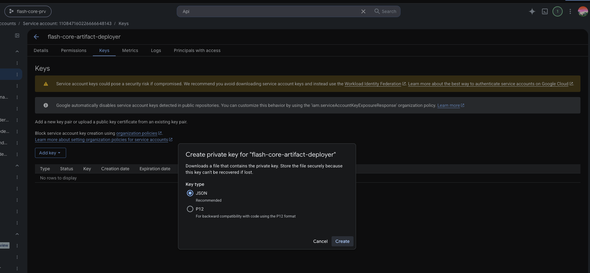
iam.disableServiceAccountKeyCreation — Organization Policy chặn tạo khoá, bật sẵn theo "Secure by Default enforcements".
- Gặp hộp thoại này thì không phải anh làm sai — nó đang xác nhận đúng lựa chọn của dự án. Chính Google khuyên trong hộp thoại: "You should choose a more secure alternative whenever possible", và cái "alternative" đó chính là Workload Identity Federation ở §7.2–§7.4.
- Đừng làm theo dòng cuối của hộp thoại ("nhờ Organization Policy Administrator tắt constraint"). Đó là gỡ hàng rào để đi vào đúng con đường ADR-014 đã chọn tránh.
- ⚠ Nhưng kiểm một thứ: hộp thoại ghi "enforced on your organization" — nghĩa là project nằm trong một Organization. Tài khoản cá nhân thuần thường không có Organization nào. Mở ☰ → IAM & Admin → Settings (hoặc ô chọn project) xem project thuộc tổ chức nào:
- Thuộc tổ chức của công ty → dừng lại. Dự án cá nhân không nên nằm trong đó: dữ liệu lẫn vào hạ tầng công ty, và nghỉ việc là mất sạch. Tạo lại project dưới tài khoản cá nhân.
- Không có tổ chức, hoặc tổ chức riêng của anh → đi tiếp bình thường.
8. Khai báo bên GitHub
Để làm gì: nói cho GitHub biết nó đang deploy vào project nào và mượn danh tính nào — đây là đầu dây bên kia của §7.
- Settings → Environments → New environment → tên
dev(cho project dev) hoặcproduction(cho project prod) - Trong trang environment vừa tạo, mục Environment variables → Add environment variable, thêm 4 biến:
Tên Giá trị GCP_PROJECT_IDProject ID của môi trường này GCP_WIF_PROVIDERchuỗi ở §7.4 của project này GCP_SERVICE_ACCOUNTgithub-deployer@<PROJECT_ID>.iam.gserviceaccount.comGCP_SQL_INSTANCESQL_INSTANCEcủa project này (dạngproject:us-central1:flash-core-db) - Mục Environment secrets → Add environment secret:
Tên Giá trị DATABASE_URL_MIGRATEpostgresql://flashcore:<DB_PASS của project này>@127.0.0.1:5432/flashcore - Một biến dùng chung cho cả hai, đặt ở mức repo: Settings → Secrets and variables → Actions → tab Variables → New repository variable →
GCP_REGION=us-central1 - Phần bảo vệ của environment
production(người duyệt, chỉ nhận tagv*-prod): §18.3
8.1 Vì sao cấu hình như vậy
Để làm gì: hiểu vì sao biến nằm ở Environment chứ không ở mức repo, và cái nào phải là secret.
- Biến nằm ở Environment, không ở mức repo. Mỗi môi trường là một project GCP riêng, có WIF và service account riêng. Để biến ở Environment thì cùng một
deploy.ymldeploy được cả hai nơi — workflow chọn Environment theo tag, rồi mọi biến tự đổi theo. Và secret của Environment chỉ lộ cho job khai báo Environment đó: job chạy cho dev không đọc được mật khẩu DB của prod. - Bước 1 — đúng hai tên
devvàproduction.deploy.ymlsuy tên Environment từ đuôi tag (-dev/-prod). GõprodhayProductionthì GitHub tự tạo một Environment rỗng mới theo tên workflow yêu cầu — job chạy với biến trống và đỏ ở bướcauth, trông như lỗi WIF. - Bước 2 — biến (variable) chứ không phải secret cho 4 giá trị này. Project ID, tên service account, chuỗi provider, tên kết nối đều không phải bí mật — biết chúng mà không có token OIDC từ đúng repo thì không làm được gì. Để ở dạng variable thì đọc được trong log khi gỡ lỗi; để ở dạng secret thì GitHub che thành
***và gỡ lỗi mù. - Bước 3 —
DATABASE_URL_MIGRATElà secret. Nó chứa mật khẩu DB. Nhưng lộ riêng nó chưa đủ vào DB: còn phải có rolecloudsql.clientđể mở proxy (§4.4.2). - Bước 3 — cổng
5432trên runner, khác cổng 6543 trên máy anh. Chuỗi này trỏ vào proxy mà workflow tự mở trên runner — máy runner sạch, không có Postgres nào khác, nên dùng cổng mặc định không đụng ai. Trên máy dev thì phải né 5432/5433 (§4.4.4). - Bước 3 — migrate đi qua proxy chứ không qua socket như app. Runner của GitHub không phải Cloud Run nên không có socket
/cloudsql/.... Và migrate phải chạy ở runner vì image runtime đã bỏprisma(devDependency). - Bước 4 —
GCP_REGIONở mức repo. Hai môi trường dùng chung một region; khai hai lần là thêm một chỗ có thể lệch.
9. Deploy lần đầu
Để làm gì: đẩy code lên chạy thật lần đầu, bằng cách gắn một git tag.
- Kiểm commit muốn deploy đã nằm trên
main - Gắn tag
v0.1.0-devrồi đẩy lên → workflow deploy vào project dev. Gắn tag là việc trên terminal: §9 bản lệnh - Mở tab Actions trên GitHub, theo dõi lần chạy tới khi xanh (các bước ở bảng dưới)
- Thử trên dev xong, gắn tag
v0.1.0-prodlên cùng commit đó → workflow dừng ở Waiting for review → Review deployments → Approve and deploy (§18.3) - Lấy URL: ☰ → Cloud Run → flash-core-api → URL nằm ở dòng trên cùng
- Muốn deploy lại đúng phiên bản đó: tab Actions → mở lần chạy cũ → Re-run all jobs
deploy.yml
| # | Bước | Hỏng thì sao |
|---|---|---|
| 0 | CI (lint, typecheck, unit, integration) | Dừng, chưa đụng gì |
| — | (chỉ prod) Chờ duyệt — tab Actions hiện Waiting for review | Chưa ai bấm thì không có gì xảy ra |
| 1 | Kiểm commit đã nằm trên main, xác thực bằng WIF | Dừng, chưa đụng gì |
| 2 | Build và đẩy image | Dừng, chưa đụng DB |
| 3 | Mở Cloud SQL Auth Proxy, prisma migrate deploy | Dừng — không deploy code mới lên schema cũ. Cloud SQL đang tắt thì đỏ ở đây |
| 4 | Deploy service + worker job | Revision cũ vẫn giữ 100% traffic |
| 5 | Kiểm /ready | Tự lùi traffic về revision trước |
9.1 Vì sao cấu hình như vậy
Để làm gì: hiểu vì sao deploy bằng git tag, và workflow dừng ở đâu khi một bước hỏng.
- Deploy bằng git tag, không phải mỗi lần push
main. Push lênmainlà việc hằng ngày; lên môi trường là một quyết định. Tag tách hai việc đó ra, và để lại dấu vết: nhìn danh sách tag là biết phiên bản nào đã lên đâu, lúc nào. Cùng cách với hệ thống công ty. - Bước 1 — commit phải nằm trên
main. Tag gắn được lên bất kỳ commit nào, kể cả commit ở nhánh chưa ai review. Workflow từ chối commit không nằm trênmain, nên thứ lên môi trường luôn là thứ đã qua PR. - Bước 4 — cùng một commit, hai tag. Không build lại code khác cho prod: thứ lên prod là đúng thứ đã chạy trên dev. Build lại từ một commit khác là prod chạy thứ chưa ai thử.
- Bảng — bước 0 chạy lại toàn bộ CI. CI lúc merge đã xanh, nhưng chạy lại trên đúng commit được tag thì loại được trường hợp tag nhầm commit, và bằng chứng "xanh" nằm ngay trong lần deploy.
- Bảng — migrate (bước 3) TRƯỚC deploy code (bước 4). Code mới thường cần cột/bảng mới; deploy code trước thì trong vài phút đó mọi request chạm cột mới đều
500. Migrate trước thì code cũ phải chạy được với schema mới — đó là lý do mọi migration của dự án đều additive (§12.1). - Bảng —
/readyhỏng thì tự lùi. Cloud Run chỉ biết container đã khởi động, không biết nó nối được DB và Redis chưa./readykiểm đúng điều đó; không xanh thì traffic quay về revision trước, người dùng không bao giờ thấy bản hỏng.
10. Cloud Scheduler gọi worker
Để làm gì: hẹn giờ gọi worker, vì Cloud Run tắt hẳn container lúc rảnh nên không có tiến trình nền nào tự chạy được.
Làm sau lần deploy đầu (§9) — job flash-core-worker phải tồn tại thì mới hẹn lịch được.
- Tạo service account riêng cho Scheduler: ☰ → IAM & Admin → Service Accounts → Create service account → Name
scheduler-invoker→ role Cloud Run Invoker (chỉ một role) → Done - ☰ → Cloud Run → Jobs → bấm
flash-core-worker→ tab Triggers → Add Scheduler Trigger (nguồn):- Name
flash-core-worker-tick - Region
us-central1 - Frequency
*/5 * * * * - Timezone tuỳ ý
- Service account
scheduler-invoker→ Create
- Name
- Thử ngay: ☰ → Cloud Scheduler → tick
flash-core-worker-tick→ Force run → quay lại jobflash-core-worker: phải có một lượt chạy mới, dấu xanh.
Làm bằng lệnh: §10 bản lệnh.
10.1 Vì sao cấu hình như vậy
Để làm gì: hiểu vì sao 5 phút chứ không 1 phút, và cái giá phải trả cho lựa chọn đó.
- Worker là Cloud Run Job chạy một lượt rồi thoát, không phải tiến trình chạy liên tục. Cloud Run scale về 0 và cắt CPU ngoài lúc xử lý request (
--cpu-throttling), nên một vòng lặp nền sẽ bị đóng băng giữa chừng. Giữ nó thức (min-instances=1+ không cắt CPU) thì tốn tiền cả ngày (ADR-012). Job chỉ tính tiền đúng những giây nó chạy. - Bước 1 — service account riêng, chỉ một role Cloud Run Invoker. Scheduler chỉ cần làm đúng một việc là gọi job. Dùng lại
github-deployerthì một lịch bị ai đó sửa có thể gọi bất cứ thứ gì mà deployer làm được; với SA riêng thì tệ nhất cũng chỉ là job chạy sai giờ. - Bước 2 — tên đúng
flash-core-worker-tick.scripts/gcp-db.sh(npm run gcp:off) tìm lịch theo tên này để dừng nó trước khi tắt DB — không thì mỗi 5 phút một lượt worker nối vào DB đã tắt, đỏ, retry. - Bước 2 — mỗi 5 phút, không phải 1 phút. Phép tính: 1 phút = 1.440 lượt/ngày × ~10 giây ≈ 432.000 vCPU-giây/tháng, vượt trần free 180.000 hơn hai lần. 5 phút cho ≈ 86.400 vCPU-giây, nằm gọn trong free tier. Đánh đổi: email xác nhận và việc huỷ đơn quá hạn chậm tối đa 5 phút — chấp nhận được vì đơn giữ chỗ 15 phút.
- Bước 2 — Timezone tuỳ ý. Lịch
*/5chạy theo phút trong giờ, múi giờ nào cũng ra cùng thời điểm. Chỉ lịch kiểu "mỗi ngày 20:00" mới cần múi giờ đúng. - Bước 3 — Force run ngay. Lịch sai quyền hay sai địa chỉ thì hỏng im lặng (§2.2): web vẫn chạy, chỉ việc nền không ai làm. Chạy tay một lần là cách duy nhất biết chắc nó thông.
11. Kiểm tra — 7 việc, làm đủ
Để làm gì: chứng minh hệ thống thật sự chạy đúng, chứ không chỉ deploy xong không báo lỗi.
URL của app nằm ở Cloud Run → flash-core-api, dòng trên cùng — gọi nó là <URL>. Kiểm bằng curl thì xem §11 bản lệnh.
- Sống chưa — mở
<URL>/healthtrên trình duyệt - Sẵn sàng chưa — mở
<URL>/ready, phải trả200 - Header bảo vệ — mở
<URL>, DevTools (F12) → tab Network → bấm request đầu tiên → Response Headers. Phải có đủ 5:content-security-policystrict-transport-securityx-content-type-optionsreferrer-policypermissions-policy
- Trang demo — mở
<URL>, trang Đăng nhập hiện ra - Đăng ký một tài khoản trên trang, rồi nâng nó lên admin trong Cloud SQL Studio (§4.2):
UPDATE users SET role = 'ADMIN' WHERE email = 'ban@example.com' RETURNING email, role;Kết quả phải ra một dòng. Xong thì đăng xuất rồi đăng nhập lại. (Cách khác: script
make-adminqua proxy — §4.2 bước 5 bản lệnh.) - Tạo dữ liệu demo qua giao diện — một product, vài SKU, một đợt sale
- Chạy thử luồng đầy đủ: đăng ký → xem đợt sale → săn → thanh toán → huỷ. Chờ 5 phút rồi kiểm đơn không trả tiền đã tự huỷ
11.1 Vì sao kiểm như vậy
Để làm gì: hiểu mỗi phép kiểm ở trên chứng minh được điều gì.
- Bước 1 và 2 là hai câu hỏi khác nhau.
/healthchỉ hỏi "process còn sống không" — xanh ngay cả khi DB chết./readyhỏi "có phục vụ được không" — kiểm cả Postgres lẫn Redis, và chính là thứdeploy.ymldùng để quyết định rollback. Lần gọi đầu chậm vài giây là cold start (Cloud Run đang dựng instance từ 0) — bình thường. - Bước 3 — từng header chặn gì:
content-security-policy— trình duyệt chỉ chạy script/style từ chính trang; một đoạn script bị chèn vào (XSS) không chạy được.strict-transport-security— trình duyệt nhớ "trang này chỉ đi HTTPS", không bao giờ thử HTTP nữa. Chỉ có tác dụng qua HTTPS, nên ở local không thấy mà trên Cloud Run phải thấy.x-content-type-options: nosniff— trình duyệt không tự đoán loại file; một file tải lên trông như ảnh không bị chạy như script.referrer-policy— không để lộ đường dẫn đầy đủ (có thể chứa id) sang trang khác khi bấm link.permissions-policy— tắt camera, micro, vị trí… mà trang không dùng.- Thiếu một cái trên cloud mà local có đủ thì thường là một lớp proxy phía trước đã cắt nó.
- Bước 5 — nâng quyền bằng SQL, không có endpoint. Cố ý không có API nâng quyền: endpoint đó là mục tiêu số một của kẻ tấn công. Câu
UPDATEtrong Studio chạy đúng câu mà scriptmake-adminchạy. Ra 0 dòng là gõ sai email hoặc chưa đăng ký. Phải đăng nhập lại vì vai trò nằm trong access token — token cũ vẫn mang vai trò cũ tới khi hết hạn (≤ 15 phút). - Bước 5 — script
make-adminkhông chạy được trong image. Nó cầnts-node, mà image runtime đã bỏ mọi devDependency (cùng lý do bước migrate phải chạy ở runner). - Bước 6 — tạo dữ liệu bằng tay, không chạy
npm run seed. Seed đổ 100.000 dòng — đủ làm đầy máydb-f1-microvà vi phạm luật "không seed dữ liệu lớn lên cloud" (hookguard_cloud_cost.pychặn sẵn). - Bước 7 — chờ 5 phút. Đó là nhịp của Scheduler (§10). Đơn quá hạn tự huỷ là bằng chứng duy nhất cho thấy cả chuỗi việc nền — Scheduler → Job → worker → DB — đang chạy.
12. Diễn tập rollback — làm một lần lúc rảnh, không phải lúc sự cố
Để làm gì: tập trước thao tác quay về bản cũ, để lúc hỏng thật anh làm theo trí nhớ chứ không vừa hoảng vừa tra tài liệu.
- ☰ → Cloud Run → flash-core-api → tab Revisions → Manage traffic
- Đặt revision cũ 100% → Save
- Mở
<URL>/readykiểm lại - Trả traffic về revision mới nhất bằng đúng bước 1–2
- Trước một migration có
DROPhoặc đổi kiểu cột: instance → Backups → Create backup
Làm bằng lệnh: §12 bản lệnh.
12.1 Vì sao làm như vậy
Để làm gì: hiểu vì sao phải tập rollback lúc rảnh chứ không đợi lúc sự cố.
- Diễn tập lúc rảnh. Lúc sự cố là lúc tay run và không có thời gian đọc hướng dẫn. Làm một lần khi bình tĩnh thì lúc cần chỉ là lặp lại thứ đã quen.
- Chuyển traffic, không deploy lại bản cũ. Revision cũ vẫn còn nguyên (và image của nó được giữ nhờ cleanup policy ở §3), nên chuyển traffic mất vài giây. Build + deploy lại mất vài phút — đúng vài phút app đang hỏng.
- Rollback chỉ đưa CODE về, schema database KHÔNG lùi theo. Revision cũ bắt buộc phải chạy được với schema mới. Đó là lý do mọi migration của dự án đều additive (thêm cột nullable/có default, thêm bảng, thêm index) — muốn xoá cột thì tách hai lần deploy: lần 1 code thôi dùng cột, lần 2 mới xoá.
- Bước 5 — sao lưu tay trước migration phá huỷ. Sao lưu tự động chạy mỗi ngày một lần; migration
DROPchạy lúc 15:00 thì bản gần nhất có thể đã cũ nửa ngày. Bản sao lưu tay là điểm quay về ngay trước thay đổi.
13. Sau 48 giờ: đo thật
Để làm gì: sau hai ngày chạy thật thì mở hoá đơn và số liệu ra đọc, xem dự đoán lúc thiết kế có đúng không.
| Đo gì | Ở đâu | Đối chiếu với |
|---|---|---|
| Tổng vCPU-giây | Cloud Run → Metrics | Trần free 180.000/tháng |
| Tiền Cloud SQL | Billing → Reports, lọc Cloud SQL, bỏ tick credit | ~$9/tháng (ADR-016) — cao hơn nhiều là tạo sai máy |
| Số connection cao nhất | SELECT count(*) FROM pg_stat_activity lúc đang dùng | ≤ 17 trên trần 25 |
| Số lệnh Upstash | Upstash → database → tab Details | 500.000 lệnh + 50 GB băng thông/tháng |
| Dung lượng Artifact Registry | Artifact Registry | 0,5 GB |
| Cold start / warm | curl -w '%{time_total}' | ghi vào spec |
Dán số vào spec Phase 7 §Bằng chứng và cập nhật ADR-012 / ADR-013 — cả hai hiện đang dùng số đo local, chưa phải số thật.
14. Khi hỏng — tra theo triệu chứng
Để làm gì: tra ngược từ triệu chứng nhìn thấy ra nguyên nhân, thay vì đoán mò từng bước.
| Triệu chứng | Nguyên nhân thường gặp nhất | Cách chữa |
|---|---|---|
| Đẩy tag mà Actions không chạy gì | Tag không khớp v*-dev / v*-prod (ví dụ v1.0.0 hay 1.0.0-dev) | Xoá tag sai rồi gắn lại đúng mẫu (lệnh) |
| Deploy đỏ ở Commit phải nằm trên main | Tag gắn vào commit của nhánh chưa merge | Merge PR trước, gắn tag lên commit trên main |
| Prod dừng ở Waiting for review mãi | Chưa ai trong danh sách Required reviewers bấm duyệt | Tab Actions → lần chạy đó → Review deployments → tick production → Approve and deploy |
Bước auth đỏ ở dev nhưng prod chạy được (hoặc ngược lại) | Biến của hai Environment dán lẫn nhau — mỗi project có WIF và SA riêng | Đối chiếu §8 cho từng environment |
| Deploy đỏ: Permission … iam.serviceaccounts.actAs | github-deployer chưa được Service Account User trên flash-core-runtime | §7.1.2 bước 5 |
CI dừng ở bước auth, báo "unable to get credentials" | Condition CEL (§7.2) không khớp tên repo, hoặc dán nhầm GCP_WIF_PROVIDER | Làm lại §7.2–§7.4, đối chiếu tên repo trong Condition CEL |
| Bước Mở Cloud SQL Auth Proxy đỏ | Cloud SQL đang tắt, hoặc deploy SA thiếu cloudsql.client | Overview của instance xem trạng thái, tắt thì bấm Start; kiểm role của github-deployer ở §7.1.2 |
App lên nhưng /ready 503, log có ENOENT /cloudsql/... | Service deploy thiếu --set-cloudsql-instances, hoặc biến GCP_SQL_INSTANCE sai | Đối chiếu biến ở §8 với Connection name ở §4.1 bước 7 |
password authentication failed | DATABASE_URL hoặc DATABASE_URL_MIGRATE gõ sai mật khẩu | Instance → Users → ⋮ cạnh flashcore → Change password (⚠ nhãn theo tài liệu), rồi sửa cả secret DATABASE_URL lẫn DATABASE_URL_MIGRATE |
App lên nhưng mọi API trả 500, log có 42P01 | Chưa chạy migration | Kiểm bước 3 của workflow có xanh không |
| App chết lúc khởi động, log liệt kê biến thiếu | Thiếu secret trong --set-secrets | Đối chiếu đủ 6 tên ở §6 |
/ready trả 503 mãi | Cloud SQL đang tắt, hoặc Redis không nối được | Overview của instance xem trạng thái; kiểm REDIS_URL có rediss:// (hai chữ s) |
| Đổi secret rồi mà app vẫn dùng giá trị cũ | Secret Manager không tự áp dụng | Phải deploy lại service |
Mọi người dùng bị 429 cùng lúc | trust proxy sai ⇒ mọi request trông như một IP | Đã đặt trust proxy = 1 trong main.ts; thêm một lớp proxy nữa thì phải đổi thành 2 |
Cannot add the project "…" to ADC as the quota project | Project đang active trong gcloud config là của nơi khác | Không phải lỗi; tách cấu hình theo §4.2 bước 2 bản lệnh (lý do ở §4.4.4) |
FATAL: password authentication failed for user "…" khi nối qua proxy | Sai mật khẩu — hoặc user không tồn tại; Postgres cố tình trả cùng một câu cho cả hai để người ngoài không dò được tên user | Mở Users đối chiếu từng ký tự tên user (flashcore chứ không phải flash-core) trước khi nghi mật khẩu |
cloud-platform scope is required but not consented | Trang đồng ý của application-default login có checkbox, bấm Continue mà chưa tick | Chạy lại, tick Select all rồi Continue (§4.2 bước 1 bản lệnh) |
| Console chặn tạo khoá: "Service account key creation is disabled" | Không phải lỗi — Organization Policy chặn sẵn, và dự án vốn không cần khoá | Bỏ qua, đi tiếp §7.2 (WIF). Đừng nhờ admin tắt policy (§7.5.8) |
| Lỡ tạo API key / OAuth client ở Credentials | Vào nhầm màn (§2.1) — dự án không dùng cái nào | Xoá nó đi. Nếu đã tải file khoá JSON về máy thì xoá cả file lẫn khoá trên Console |
| Upstash báo "You can create 1 database in free tier" | Gói Free chỉ cho một database | Không tạo thêm được ở gói Free — xem các cách ở §5.1 |
/ready 503, log Redis báo WRONGPASS hoặc không kết nối được | Dán nhầm chuỗi tab REST (https://…) hoặc chuỗi redis-cli (redis://) vào REDIS_URL | Chép lại từ tab TCP (§5 bước 7), phải bắt đầu bằng rediss:// |
| Deploy chậm bất thường | Artifact Registry khác region với Cloud Run | Tạo lại repo ở us-central1 |
| Hoá đơn cao hơn ~$9/tháng dù không ai dùng | Cloud SQL tạo sai máy / bật HA / bật PITR, hoặc Docker image dồn | Overview của instance: Machine type phải là db-f1-micro, Availability Single zone; kiểm §3 cleanup policy |
15. Chốt chặn chi phí
Để làm gì: dựng các chốt chặn để hoá đơn không bao giờ vượt khỏi tầm kiểm soát, kể cả khi anh quên.
15.1 Kiểm lại sau khi deploy
Để làm gì: soát lại các chốt chi phí bằng số thật, sau khi mọi thứ đã chạy.
- ☐ Budget ≈ $12 (300.000₫ nếu tài khoản tính bằng VND), hai ô Savings đã bỏ tick (§1)
- ☐ Cloud SQL là edition Enterprise, máy db-f1-micro, Single zone — trang Overview của instance
- ☐ Point-in-time recovery tắt, hai ô giữ backup sau khi xoá tắt (§4.1 bước 5.4)
- ☐
--max-instances 2trên service — xem ở Cloud Run → flash-core-api → tab Revisions - ☐
--cpu-throttling(billing request-based) — cùng chỗ trên - ☐ Cleanup policy của Artifact Registry đã bật, ở chế độ Delete artifacts
- ☐
LOG_LEVEL=info(khôngdebug) trên production - ☐ Scheduler worker 5 phút, không phải 1 phút
- ☐ Ngày hết credit đã ghi vào lịch — đó là ngày phải chọn lại ở §16
15.2 Nghỉ dài (vài tuần trở lên): xoá instance
Để làm gì: biết làm gì khi nghỉ vài tuần, để không trả tiền cho thứ không ai dùng.
- Instance → Edit → Data protection → bỏ tick Prevent instance deletion → Save
- Quay lại Overview → Delete
- Khi quay lại: làm lại §4.1 (đặt tên khác nếu tên cũ còn bị giữ — xem §15.3), rồi sửa biến
GCP_SQL_INSTANCE+ secretDATABASE_URL
15.3 Vì sao cấu hình như vậy
Để làm gì: hiểu vì sao tắt instance lại không rẻ hơn để nó chạy.
- Trong 90 ngày credit, để Cloud SQL chạy liên tục — KHÔNG tắt lúc nghỉ. Nghe ngược với trực giác "không dùng thì tắt", nhưng tắt không rẻ hơn: instance đã tắt vẫn bị tính tiền ổ đĩa và IP công khai (tài liệu Google), mà IP lúc tắt (~$0,01/giờ, ⚠ nguồn thứ ba) xấp xỉ giá chính cái máy
db-f1-micro($0,01/giờ). Tắt/bật mỗi ngày chỉ đổi tiền máy lấy tiền IP, cộng thêm việc phải nhớ — và sao lưu tự động chỉ chạy lúc máy bật. Phép tính đầy đủ: ADR-016. - Cloud Run service thì tự lo: không ai gọi thì về 0 instance, 0đ.
scripts/gcp-db.shnpm run gcp:off/gcp:on) giữ trong repo nhưng chưa dùng. Nó chỉ có ích khi đi kèm việc gỡ IP công khai (hướng Private IP ở §16) — lúc đó nó đã làm sẵn nửa việc: dừng Scheduler của worker trước rồi mới tắt DB, bật thì ngược lại.- Từng dòng của §15.1:
- Budget + Savings — chốt chặn duy nhất tự tìm đến anh; lý do chi tiết ở §1.1.
- Edition / máy / zone — ba ô quyết định ~90% tiền Cloud SQL; sai một ô là hoá đơn gấp mười (§4.4).
- PITR và backup sau khi xoá — hai khoản tính tiền âm thầm theo dung lượng, không hiện trong bảng giá lúc tạo.
--max-instances 2— van an toàn kép: trần chi phí (một đợt traffic bất thường không đẻ ra 100 instance) và trần connection tới DB (pool 5 × 2 instance = 10, dưới trần 25 của máy nhỏ — ADR-013).--cpu-throttling— cờ quyết định chi phí lớn nhất của Cloud Run: chỉ tính CPU lúc đang xử lý request. Tắt nó (instance-based) là trả tiền CPU suốt thời gian instance còn sống.- Cleanup policy Delete — không có thì Artifact Registry vượt 0,5 GB sau ~3 lần deploy (§3.1).
LOG_LEVEL=info— Cloud Logging free 50 GB/tháng;debugghi mỗi query, mỗi request, có thể nhân lượng log lên hàng chục lần.- Scheduler 5 phút — 1 phút vượt trần vCPU-giây free hơn hai lần (§10.1).
- Ngày hết credit — loại quyết định có hạn sử dụng mà ba tháng sau không ai còn nhớ; phát hiện muộn thì phát hiện bằng hoá đơn.
- §15.2 — xoá instance là cách duy nhất về 0đ. Dữ liệu demo tạo lại qua giao diện mất 5 phút, schema thì migration tự dựng lại ở lần deploy sau. Bước 1 phải bỏ Prevent instance deletion trước — đó là hàng rào chống xoá nhầm đặt ở §4.1 bước 5.4. Tên instance vừa xoá có thể bị giữ tới một tuần, nên tạo lại ngay thì đặt tên khác (ví dụ
flash-core-db-2).
16. Khi $300 credit hết — đổi những gì
Để làm gì: biết trước phải đổi những gì khi $300 credit hết hạn, để không bị bất ngờ vào ngày thứ 91.
Có đúng một thứ bắt đầu ra hoá đơn thật: Cloud SQL. Upstash vốn dùng gói free (credit không áp cho nó), cấu hình Cloud Run vốn đã được đặt cho mục tiêu 0đ.
Với Cloud SQL, chọn một trong bốn (ADR-016 §Khi credit sắp hết):
| Cách | Tiền/tháng (⚠ kiểm lại) | Khi nào chọn |
|---|---|---|
| Giữ nguyên, chạy liên tục | ~$9 | Chấp nhận trả tiền, muốn không phải nghĩ |
Private IP cố định, gỡ IP công khai rồi tắt khi nghỉ (npm run gcp:off) | ~$2–3 | Còn học đều; chịu dựng thêm Private Services Access |
| Xoá instance, tạo lại khi cần demo | 0đ | Nghỉ dài, hoặc chỉ cần bật lúc phỏng vấn |
| Chuyển về Neon Free | 0đ | Không muốn trả đồng nào |
Nếu trong 90 ngày anh có nới cấu hình cho thoải mái, thì đây là chỗ phải trả lại:
| Nếu đã bật trong lúc có credit | Khi hết credit |
|---|---|
--min-instances 1 (hết cold start, ~$10–15/tháng) | Trả về 0 |
--no-cpu-throttling (instance-based billing) | Trả về --cpu-throttling |
| Worker chạy như service thức liên tục | Trả về Cloud Run Job + Scheduler |
| Uptime check nhiều vùng, nhịp dày | Còn 1 check, 1 vùng, nhịp 15 phút |
Ghi ngày hết credit vào lịch ngay hôm nay. Và giữ nguyên đường
worker-once+ Scheduler kể cả khi đang chạy min-instances, để còn lùi về được.
17. Tuỳ chọn: gửi email thật
Để làm gì: thay cổng email giả lập bằng dịch vụ gửi thật, nếu muốn demo có email tới hộp thư thật.
Hiện MAIL_SENDER là bản ghi-ra-log — luồng outbox vẫn chứng minh được "không mất, không trùng", chỉ là không có mail nào tới hộp thư. Muốn mail thật:
- Đăng ký Resend hoặc Mailgun (cả hai có gói free ~100 mail/ngày) — bên thứ ba ngoài GCP, credit không áp
- Thêm secret
MAIL_API_KEYvào Secret Manager (⚠ lúc đó là 7 secret — vượt free tier 6 version, phải huỷ bớt version cũ hoặc chấp nhận trả phí vài xu) - Viết một
MailSendermới cạnhLoggingMailSendervà đổi provider trongMailModule
Việc này chưa làm, và nó là điều kiện để mở khoá hai tính năng đang nằm trong Non-goals: xác thực email và quên mật khẩu.
18. Làm việc nhiều người: hai môi trường và phân quyền
Để làm gì: tách môi trường thử khỏi môi trường thật và phân quyền cho nhiều người, theo đúng cách một công ty làm.
Cấu trúc học theo hệ thống đang chạy ở công ty (OfficeCube), vá thêm ba chỗ hở của nó. So sánh từng mục ở §18.6; lý do đầy đủ ở ADR-017.
18.1 Dựng hai project
Để làm gì: dựng môi trường thứ hai — lặp lại §1–§17 cho project còn lại.
- Làm §2 → §11 với project
flash-core-dev - Làm lại §2 → §11 với project
flash-core-prod - Sửa budget ở §1 lên ≈ $24 (600.000₫), scope vẫn All projects
- Mở Overview của hai Cloud SQL và hai Cloud Run service đặt cạnh nhau, đối chiếu từng dòng
18.2 Nhóm người và quyền
Để làm gì: cấp quyền cho người theo nhóm, để thêm/bớt người không phải đi sửa IAM từng chỗ.
- Tạo hai group ở groups.google.com → Create group (tài khoản Gmail thường tạo được; địa chỉ có dạng
…@googlegroups.com):Group Ai Project dev Project prod flash-core-admins@Tâm (+ một người dự phòng nếu có) Owner Owner flash-core-devs@Người cùng làm Editor Viewer - Gán quyền cho từng ô trong bảng: vào đúng project → ☰ → IAM & Admin → IAM → Grant access → New principals là địa chỉ group → chọn role → Save
18.3 Bảo vệ environment production trên GitHub
Để làm gì: bắt buộc có người duyệt trước khi bất cứ thứ gì lên môi trường thật.
Settings → Environments → production:
- Mục Deployment protection rules → tick Required reviewers → thêm tài khoản được quyền duyệt → Save protection rules
- Ô Prevent self-review: làm một mình thì để trống; có người thứ hai thì tick
- Mục Deployment branches and tags → chọn Selected branches and tags → Add deployment branch or tag rule → Ref type Tag → Name pattern
v*-prod→ Add rule - Làm tương tự cho environment
devnhưng chỉ bước 3, với mẫuv*-dev
18.4 Khoá tag và nhánh
Để làm gì: chặn đường đi tắt — không ai đẩy thẳng lên main hay tự tạo tag prod.
Settings → Rules → Rulesets:
- New tag ruleset:
- Ruleset name
khoa-tag-prod· Enforcement status Active - Bypass list thêm Repository admin
- Target tags → Add target → Include by pattern →
v*-prod - Tick Restrict creations, Restrict updates, Restrict deletions → Create
- Ruleset name
- New branch ruleset:
- Target branches Include default branch
- Tick Require status checks to pass → thêm hai check
Lint · Typecheck · TestvàIntegration test (Postgres + Redis thật) - Tick Block force pushes → Create
- Có người thứ hai thì bật thêm trong branch ruleset: Require a pull request before merging → Require review from Code Owners. Làm một mình thì không bật.
18.5 Một vòng phát hành hoàn chỉnh
Để làm gì: xem cả quy trình chạy một lượt, từ commit tới prod.
- Merge vào
mainqua PR (CI xanh) - Gắn tag
v0.2.0-dev→ workflow lên dev - Kiểm trên URL của dev (§11). Ổn thì gắn tag
v0.2.0-prodlên cùng commit đó - Tab Actions → Review deployments → Approve and deploy
- Xem phiên bản nào đang ở prod: GitHub → Code → Tags, lọc
-prod - Lùi prod: gắn tag prod mới lên commit cũ (ví dụ
v0.1.1-prodtrỏ vào commit củav0.1.0) rồi duyệt — hoặc lùi traffic tại chỗ theo §12
Bước 2, 3, 6 là lệnh git tag: §18 bản lệnh.
18.6 Vì sao cấu hình như vậy
Để làm gì: hiểu vì sao bê mô hình của công ty về nhưng vá ba lỗ của nó.
So với hệ thống công ty — bê nguyên phần tốt, vá ba chỗ hở:
| Công ty (OfficeCube) | Flash-Core | |
|---|---|---|
| Môi trường | 2 project: dev, prod | 2 project: flash-core-dev, flash-core-prod |
| Kích hoạt deploy | Tag v*-dev / v*-prod → Cloud Build | Tag v*-dev / v*-prod → GitHub Actions |
| Ai duyệt lên prod | Không ai — đẩy tag là lên | Required reviewers của environment production |
| Quyền của người | Không nằm trong code, một cá nhân giữ khoá | Google Group + bảng quyền ở §18.2 |
| Danh tính CI | Mỗi repo × môi trường một build SA | Mỗi project một github-deployer (qua WIF) |
| Container đọc secret | Từng secret một | Từng secret một (§7.1.3) |
| Khoá file nhạy cảm | Không có CODEOWNERS, không khoá tag | .github/CODEOWNERS + ruleset khoá tag v*-prod |
| Chặn người ngoài vào app | IAP trước Load Balancer | Không — demo công khai (LB tốn ~$18/tháng) |
- §18.1 — mỗi môi trường một project, không phải hai service trong cùng project. Project là ranh giới của IAM, billing và hạn mức: thử nghiệm ở dev (xoá DB, cấp quyền rộng cho người mới) không thể chạm tới prod, vì prod nằm ở một project mà người đó không có quyền.
- §18.1 — Upstash gói Free chỉ có một database. Dev và prod không dùng chung được; ba cách xử lý (chưa chốt) ở §5.1.
- §18.1 bước 3 — budget ≈ 600.000₫. Mỗi project có một Cloud SQL ~$9/tháng. Free tier của Cloud Run, Scheduler, Secret Manager, Artifact Registry tính theo tài khoản billing, nên hai project chia nhau một phần miễn phí: Secret Manager thành 12 version (free 6), Artifact Registry có thể quá 0,5 GB — mỗi thứ vài xu mỗi tháng.
- §18.1 bước 4 — đối chiếu hai project cạnh nhau. Dựng tay hai lần là chỗ dễ lệch nhất; công ty tránh bằng Terraform, dự án này chưa dùng (ADR-017). Lệch cấu hình giữa dev và prod là loại lỗi "chạy trên dev mà prod hỏng".
- §18.2 — cấp cho group, không cấp từng người. Người vào người ra chỉ là thêm/bớt thành viên group, không phải sửa IAM ở hai project — và nhìn bảng ở §18.2 là biết ai có quyền gì.
- §18.2 — devs là Editor ở dev nhưng Viewer ở prod. Ở dev cần tự do thử. Ở prod, Viewer xem được cấu hình, log, metric để gỡ lỗi nhưng không đọc được secret và không deploy — muốn lên prod thì đi đường tag + duyệt. Không ai giữ
Cloud Run Adminở prod ngoàigithub-deployer. - §18.2 — Owner là lối thoát khẩn cấp (break-glass), không phải quyền dùng hằng ngày. Group admins càng ít người càng tốt, nhưng ít nhất hai nếu có thể — một người là bus factor 1, đúng lỗ của hệ thống công ty.
- §18.3 bước 1 — Required reviewers. Đẩy tag là một lệnh gõ được trong 2 giây, kể cả gõ nhầm. Bắt duyệt thêm một cú bấm có chủ ý trước khi đụng prod. ⚠ Repo private trên gói GitHub Free không có tính năng này — miễn phí cho repo public; repo portfolio thường để public nên không vướng.
- §18.3 bước 2 — Prevent self-review tuỳ số người. Làm một mình mà tick thì không ai duyệt được — tự khoá tay. Có người thứ hai thì tick: người đẩy tag không tự duyệt được.
- §18.3 bước 3 — environment chỉ nhận tag
v*-prod. Không có luật này thì một workflow khác (hay một nhánh bất kỳ) cũng khai báoenvironment: productionvà đọc được secret của prod. - §18.4 bước 1 — khoá tag prod. Chỉ admin gắn được tag prod, và không ai sửa/xoá được tag prod đã có — lịch sử "phiên bản nào đã lên prod" không bị viết lại.
- §18.4 bước 2 — khoá nhánh
main. Ai sửa đượcdeploy.ymllà điều khiển đượcgithub-deployer(§7.5.7). Bắt CI xanh và chặn force push là cách để mọi thay đổi lênmainđều đi qua kiểm tra. - §18.4 bước 3 — CODEOWNERS chỉ bật khi có người thứ hai.
.github/CODEOWNERSdeploy.yml, migration vàsrc/infra/. Nhưng GitHub không cho tự duyệt PR của mình — làm một mình mà bật là tự khoá tay. - §18.5 — cùng một commit, hai tag. Không build lại code khác cho prod — thứ lên prod là đúng thứ đã chạy trên dev (§9.1).
19. Lộ trình nâng cấp mạng — làm sau, từ dễ đến khó
Để làm gì: biết đường nâng cấp phần mạng về sau — không làm bây giờ, chỉ để khỏi phải nghĩ lại từ đầu lúc cần.
§1–§18 dựng bản đơn giản nhất chạy được: Cloud SQL dùng Public IP + Auth Proxy, Redis ở Upstash, không có VPC nào. Mục này là kế hoạch học VPC, subnet, Private IP, Cloud Run nối vào mạng riêng — chưa làm, làm sau khi §1–§18 đã chạy ổn.
Nguyên tắc của lộ trình: mỗi chặng cố ý tạo ra đúng vấn đề mà chặng sau giải. Không đọc trước giải pháp; làm chặng N, test, nhìn thấy nó hỏng ở đâu, rồi mới sang chặng N+1. Kiến thức mới đến từ vấn đề tự gặp, không phải từ tài liệu.
| # | Chặng | Học được | Vấn đề sẽ lộ ra (→ chặng sau giải) | Tiền (⚠ ước lượng) |
|---|---|---|---|---|
| 1 | VPC tự tạo + máy ảo không IP công khai, vào bằng IAP | VPC, subnet, firewall rule, SSH không mở cổng 22 ra internet | Máy không ra được internet: apt update treo | ~0đ — e2-micro nằm trong free tier |
| 2 | Cloud NAT | Đường ra của VPC, IP đi ra cố định | Cloud Run vẫn chưa "thấy" gì trong VPC | Vài xu/buổi; để cả tháng vài đô (IP tĩnh tính theo giờ) |
| 3 | Cloud Run nối vào VPC (Direct VPC egress) | Container gọi IP nội bộ; chọn traffic nào đi qua VPC | DB vẫn đang mở ra internet — VPC chưa bảo vệ gì cả | ~0đ |
| 4 | Cloud SQL thêm Private IP, rồi gỡ Public IP | Private Services Access, dải IP dành riêng | Migrate trên GitHub runner đỏ, máy dev mất đường vào DB | ~0đ thêm; sau credit rẻ hơn (~$9 → ~$2–3) |
| 5 | Migrate chạy trong VPC + máy dev vào qua bastion | Cloud Run Job trong VPC, bastion + IAP tunnel | — (khép vòng) | ~0đ — dùng lại máy ảo chặng 1 |
| 6 | (Tuỳ chọn) Memorystore, một buổi rồi xoá | Redis managed trong VPC, so với Upstash | — | ~$1–2/buổi; quên xoá ~$35/tháng |
19.1 Chặng 1 — VPC + máy ảo không IP công khai
Để làm gì: dựng mạng riêng và một máy ảo không phơi ra internet.
- Trên project dev: tạo VPC mới ở chế độ custom (không dùng VPC
default), một subnet ởus-central1 - Tạo máy ảo e2-micro trong subnet đó, không gắn IP công khai
- Tạo firewall rule chỉ cho dải IP của IAP vào cổng 22, rồi SSH vào máy qua IAP
- Test: trong máy, chạy
apt update→ quan sát nó treo. Đó là vấn đề của chặng 2.
19.2 Chặng 2 — Cloud NAT
Để làm gì: cho máy trong mạng riêng ra được internet, mà ngoài vẫn không vào được.
- Tạo Cloud Router + Cloud NAT cho subnet ở chặng 1
- Test:
apt updatechạy được;curl ifconfig.metrong máy ra đúng IP của NAT - Dọn: học xong thì xoá NAT (và IP tĩnh nếu có) — để nguyên là tính tiền theo giờ
19.3 Chặng 3 — Cloud Run nối vào VPC
Để làm gì: đưa container Cloud Run vào bên trong mạng riêng.
- Bật Direct VPC egress cho service ở dev, trỏ vào subnet chặng 1, chọn chỉ dải IP nội bộ đi qua VPC
- Test: từ container gọi được một dịch vụ nhỏ chạy trên máy ảo chặng 1 bằng IP nội bộ
- Nhận ra: mạng riêng đã có, nhưng Cloud SQL vẫn có IP công khai — VPC chưa che được gì
19.4 Chặng 4 — Cloud SQL Private IP (đổi kiến trúc: cần spec + ADR trước)
Để làm gì: bỏ hẳn IP công khai của database.
- Bật Private Services Access cho VPC, thêm Private IP cho Cloud SQL — giữ Public IP
- Cho Cloud Run nối DB qua Private IP, test §11 xanh
- Gỡ Public IP → chạy lại một lần deploy và thử nối từ máy dev
- Quan sát: bước migrate đỏ, proxy trên máy dev không nối được. Đó là vấn đề của chặng 5.
19.5 Chặng 5 — đường vào cho migrate và máy dev
Để làm gì: giữ lại đường vào hợp lệ cho migrate và máy dev sau khi đã đóng IP công khai.
- Migrate: chạy bằng một Cloud Run Job nằm trong VPC, với một image riêng có
prisma(image runtime đã bỏ nó) - Máy dev: đi qua máy ảo chặng 1 làm bastion, bằng IAP tunnel
- Test: deploy dev xanh từ đầu tới cuối;
npm run gcp:off/gcp:ongiờ thực sự tiết kiệm - Làm lại cho prod khi dev đã chạy ổn
19.6 Chặng 6 (tuỳ chọn) — Memorystore
Để làm gì: thay Upstash bằng Redis nằm trong chính mạng riêng đó.
- Một buổi: tạo Memorystore Basic 1 GB trong VPC, đổi
REDIS_URLcủa dev sang IP nội bộ, chạy §11 - Trong cùng buổi: xoá Memorystore, trả
REDIS_URLvề Upstash
19.7 Vì sao lộ trình như vậy
Để làm gì: hiểu vì sao thứ tự sáu chặng là như vậy, và chặng nào cần spec + ADR trước.
- Làm sau §1–§18, không làm cùng lúc. Dựng Public IP trước thì có một bản chạy được để so sánh: chặng nào hỏng là biết ngay do chặng đó, không phải do cả chồng thay đổi.
- Từ dễ đến khó, từ lab tới kiến trúc. Chặng 1–3 là lab trên dev: hỏng thì xoá đi làm lại, không đụng app. Chặng 4–5 đổi kiến trúc (ADR-016 đang chốt Public IP,
deploy.ymlđang migrate trên runner) nên phải có spec + ADR trước, theo đúng quy trình của repo. - Mỗi chặng lộ ra vấn đề của chặng sau. Đó là cách các công ty thật đi tới VPC: không ai dựng bastion vì đọc thấy nó hay, mà vì một ngày gỡ Public IP xong thì không vào được DB nữa. Tự gặp vấn đề thì nhớ lâu hơn đọc lời giải.
- Máy ảo chặng 1 dùng lại ở chặng 5. Không có máy nào dựng ra chỉ để học rồi bỏ.
- Chi phí: chặng 1, 3, 4, 5 gần như 0đ (e2-micro free tier; Direct VPC egress và Private Services Access không tính phí riêng — ⚠ kiểm lại). Chỉ NAT (chặng 2) và Memorystore (chặng 6) tính theo giờ, nên làm theo buổi rồi xoá.
- Hạn chót mềm: xong chặng 4–5 trước khi hết credit. Đó là lúc Cloud SQL bắt đầu ra hoá đơn (§16); gỡ được Public IP thì tắt máy lúc nghỉ mới thực sự rẻ hơn.
- Memorystore để cuối và tuỳ chọn. Mục tiêu là học VPC, không phải học Redis — Redis học ở local là đủ sâu (§5.1). Nó chỉ đáng làm để so managed với Upstash, sau khi VPC đã có sẵn.